<!DOCTYPE lake>
<p data-lake-id="u3d750f73" id="u3d750f73" style="text-align: left"><span data-lake-id="u7d7126fb" id="u7d7126fb">本章我们来学习2025年最火爆的AI大模型对话，近年来随着AI技术的发展，语音高效对话变得越来越容易，让我们可以低成本将这项技术应用到实际。</span></p><p data-lake-id="u8cf767be" id="u8cf767be"><span data-lake-id="u52ae6035" id="u52ae6035">下图我列出了AI大模型对话的经典流程图，我们来解释一下它的过程</span></p><ol list="u81c0208a"><li data-lake-id="u54036509" fid="uffa42df1" id="u54036509"><span data-lake-id="uc35248ef" id="uc35248ef">我们说了句</span><strong><span data-lake-id="u37197f9e" id="u37197f9e">你好，</span></strong><span data-lake-id="u331e8227" id="u331e8227">这是一条</span><span data-lake-id="u93409fb1" id="u93409fb1" style="background-color: #DF2A3F">你好</span><strong><span data-lake-id="u505be4be" id="u505be4be" style="background-color: #FAFAFA">音频数据</span></strong></li><li data-lake-id="u845eaab7" fid="uffa42df1" id="u845eaab7"><span data-lake-id="u0a0a28d9" id="u0a0a28d9">将音频数据发送给百度/豆包这些平台，交点小钱，它会把</span><span data-lake-id="udace4e64" id="udace4e64" style="background-color: #DF2A3F">语音识别</span><span data-lake-id="ue58e0f21" id="ue58e0f21">为文本</span></li><li data-lake-id="u88fe2b99" fid="uffa42df1" id="u88fe2b99"><span data-lake-id="ua4f80c7d" id="ua4f80c7d">得到识别的</span><span data-lake-id="ubdb41ad8" id="ubdb41ad8" style="background-color: #DF2A3F">你好</span><strong><span data-lake-id="u1cf813b1" id="u1cf813b1" style="background-color: #FAFAFA">文本</span></strong></li><li data-lake-id="ue01277c4" fid="uffa42df1" id="ue01277c4"><span data-lake-id="u2892e53a" id="u2892e53a">将你好文本，发送给大模型Deepseek,它会产生结果：</span><span data-lake-id="uda682844" id="uda682844" style="background-color: #DF2A3F">你好呀，很高兴认识你</span></li><li data-lake-id="u18f36766" fid="uffa42df1" id="u18f36766"><span data-lake-id="ue86754e3" id="ue86754e3" style="background-color: #FFFFFF">获得</span><span data-lake-id="uad777fd3" id="uad777fd3" style="background-color: #DF2A3F">你好呀，很高兴认识你</span><strong><span data-lake-id="u17417d98" id="u17417d98" style="background-color: #FFFFFF">文本</span></strong></li><li data-lake-id="u92d9d54c" fid="uffa42df1" id="u92d9d54c"><span data-lake-id="u2f76e17c" id="u2f76e17c" style="background-color: #FFFFFF">将</span><span data-lake-id="u12bf3dde" id="u12bf3dde" style="background-color: #DF2A3F">你好呀，很高兴认识你</span><strong><span data-lake-id="u646ba77a" id="u646ba77a" style="background-color: #FFFFFF">文本，</span></strong><span data-lake-id="ua2c4a674" id="ua2c4a674" style="background-color: #FFFFFF">发送给</span><strong><span data-lake-id="u3251cb95" id="u3251cb95" style="background-color: #DF2A3F">语音合成</span></strong><span data-lake-id="u0bc0366b" id="u0bc0366b" style="background-color: #FFFFFF">服务器，将文本转成音频数据</span></li><li data-lake-id="u9bcfc936" fid="uffa42df1" id="u9bcfc936"><span data-lake-id="u4f503a3b" id="u4f503a3b" style="background-color: #FFFFFF">获得音频数据，在设备端播放出来即可</span></li></ol><p data-lake-id="uc7b87e53" id="uc7b87e53" style="text-align: center"><br/></p><p data-lake-id="uaeabb887" id="uaeabb887" style="text-align: center">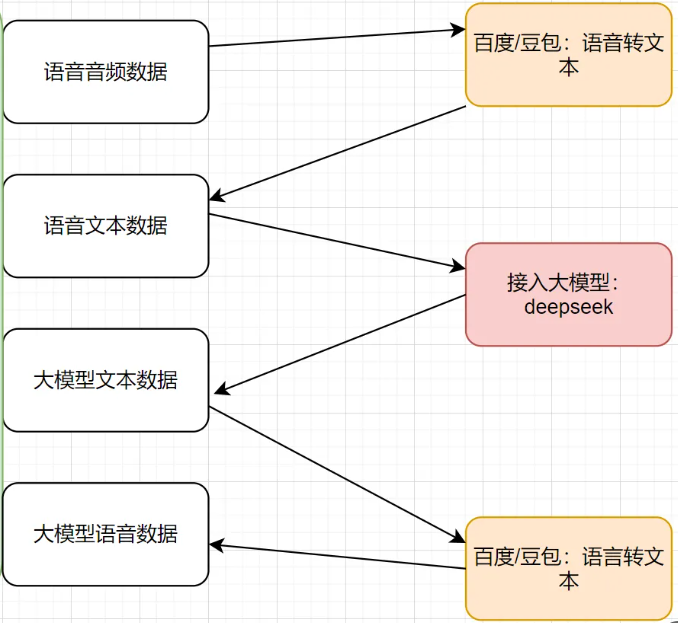</p><h2 data-lake-id="epVQ0" data-lake-index-type="2" id="epVQ0"><span data-lake-id="u9d61dd50" id="u9d61dd50">PC端音频数据处理</span></h2><p data-lake-id="uf745c6c1" id="uf745c6c1"><code data-lake-id="ubfb0e9d4" id="ubfb0e9d4"><span class="lake-fontsize-12" data-lake-id="uf664a4e3" id="uf664a4e3" style="color: rgb(64, 64, 64)">PyAudio</span></code><span class="lake-fontsize-12" data-lake-id="u290f8a72" id="u290f8a72" style="color: rgb(64, 64, 64)"> </span><span class="lake-fontsize-12" data-lake-id="u2299fe08" id="u2299fe08" style="color: rgb(64, 64, 64)">是一个用于录制和播放音频的 Python 库，基于 PortAudio 库。它提供了跨平台的音频处理功能，支持 Windows、macOS 和 Linux 等操作系统。</span></p><h3 data-lake-id="31762d66" data-lake-index-type="2" id="31762d66"><span data-lake-id="u2bccfeb1" id="u2bccfeb1" style="color: rgb(64, 64, 64)">主要功能</span></h3><ol list="u406b37d7"><li data-lake-id="uc4f298ba" fid="ub4a33873" id="uc4f298ba"><strong><span class="lake-fontsize-12" data-lake-id="u5a24d821" id="u5a24d821" style="color: rgb(64, 64, 64)">音频录制</span></strong><span class="lake-fontsize-12" data-lake-id="u6ef698c5" id="u6ef698c5" style="color: rgb(64, 64, 64)">：从麦克风或其他输入设备捕获音频。</span></li><li data-lake-id="u914b3291" fid="ub4a33873" id="u914b3291"><strong><span class="lake-fontsize-12" data-lake-id="u26ca4d7b" id="u26ca4d7b" style="color: rgb(64, 64, 64)">音频播放</span></strong><span class="lake-fontsize-12" data-lake-id="uf8966b96" id="uf8966b96" style="color: rgb(64, 64, 64)">：将音频数据输出到扬声器或其他设备。</span></li><li data-lake-id="u1b36a73d" fid="ub4a33873" id="u1b36a73d"><strong><span class="lake-fontsize-12" data-lake-id="u48f8d0c2" id="u48f8d0c2" style="color: rgb(64, 64, 64)">音频流处理</span></strong><span class="lake-fontsize-12" data-lake-id="u4ef44573" id="u4ef44573" style="color: rgb(64, 64, 64)">：支持实时音频流的录制和播放。</span></li></ol><h3 data-lake-id="e655a410" data-lake-index-type="2" id="e655a410"><span data-lake-id="u0cfee72b" id="u0cfee72b" style="color: rgb(64, 64, 64)">安装</span></h3><p data-lake-id="ue57c65c0" id="ue57c65c0"><span class="lake-fontsize-12" data-lake-id="u04536c77" id="u04536c77" style="color: rgb(64, 64, 64)">可以通过</span><span class="lake-fontsize-12" data-lake-id="u5007eda8" id="u5007eda8" style="color: rgb(64, 64, 64)"> </span><code data-lake-id="u30af67ab" id="u30af67ab"><span class="lake-fontsize-12" data-lake-id="ucceb2b02" id="ucceb2b02" style="color: rgb(64, 64, 64)">pip</span></code><span class="lake-fontsize-12" data-lake-id="u403f633c" id="u403f633c" style="color: rgb(64, 64, 64)"> </span><span class="lake-fontsize-12" data-lake-id="uba4e6c73" id="uba4e6c73" style="color: rgb(64, 64, 64)">安装：</span></p><span class="yuque-card-unsupported">[codeblock]</span><p data-lake-id="u0bbc4a6f" id="u0bbc4a6f"><br/></p><h3 data-lake-id="JF89g" data-lake-index-type="2" id="JF89g"><span data-lake-id="u2091f10e" id="u2091f10e">音频数据录入</span></h3><h4 data-lake-id="clSk9" data-lake-index-type="2" id="clSk9"><span data-lake-id="u93736e82" id="u93736e82">了解参数</span></h4><span class="yuque-card-unsupported">[codeblock]</span><p data-lake-id="udf8fef05" id="udf8fef05"><span class="lake-fontsize-12" data-lake-id="ub92647ae" id="ub92647ae">FORMAT: 音频数据的深度，也就是每个音频样本数据是多少位，常用16bit,24bit,32bit, 位数越大音质越好</span></p><p data-lake-id="u4c1a3b6b" id="u4c1a3b6b"><span class="lake-fontsize-12" data-lake-id="u94f4a6b5" id="u94f4a6b5">CHANNELS: 通道数量，音频的左声道，右声道，声道越多音质越好，通常语音识别场景都是单声道</span></p><p data-lake-id="u47a8477a" id="u47a8477a"><span class="lake-fontsize-12" data-lake-id="ueee4c72b" id="ueee4c72b">RATE: 采样率，常用16000，24000，采样率越高，音质越好，表示的是每秒钟读取多少个音频样本</span></p><p data-lake-id="ueb82daa9" id="ueb82daa9"><span class="lake-fontsize-12" data-lake-id="ubcc881a1" id="ubcc881a1">现在你能算出，</span><span class="lake-fontsize-12" data-lake-id="uca43f563" id="uca43f563" style="background-color: #ECAA04">采样率16000的情况下，每秒钟会读取多少个字节的数据吗？</span></p><h4 data-lake-id="CIORx" data-lake-index-type="2" id="CIORx"><span data-lake-id="uf504109f" id="uf504109f" style="background-color: #FFFFFF">录音</span></h4><h5 data-lake-id="hnRet" data-lake-index-type="2" id="hnRet"><span data-lake-id="uc188dd04" id="uc188dd04">创建PyAudio对象</span></h5><span class="yuque-card-unsupported">[codeblock]</span><h5 data-lake-id="msfDB" data-lake-index-type="2" id="msfDB"><span data-lake-id="u466ef115" id="u466ef115">打开音频流</span></h5><span class="yuque-card-unsupported">[codeblock]</span><h5 data-lake-id="IsNyr" data-lake-index-type="2" id="IsNyr"><span data-lake-id="u3465e471" id="u3465e471">读取音频数据</span></h5><span class="yuque-card-unsupported">[codeblock]</span><h5 data-lake-id="s9NaA" data-lake-index-type="2" id="s9NaA"><span data-lake-id="uf992fd44" id="uf992fd44">保存到文件</span></h5><span class="yuque-card-unsupported">[codeblock]</span><p data-lake-id="uaa59a0e2" id="uaa59a0e2"><br/></p><h5 data-lake-id="Lun5z" data-lake-index-type="2" id="Lun5z"><span data-lake-id="u10b6780f" id="u10b6780f">释放资源</span></h5><span class="yuque-card-unsupported">[codeblock]</span><p data-lake-id="udbba208d" id="udbba208d"><br/></p><p data-lake-id="u1f0e32ee" id="u1f0e32ee"><br/></p><h3 data-lake-id="fFqGu" data-lake-index-type="2" id="fFqGu"><span data-lake-id="u6a8876ec" id="u6a8876ec">音频数据输出</span></h3><h4 data-lake-id="fIgZy" data-lake-index-type="2" id="fIgZy"><span data-lake-id="u2feb1cff" id="u2feb1cff">声明常量</span></h4><span class="yuque-card-unsupported">[codeblock]</span><h4 data-lake-id="ce1rU" data-lake-index-type="2" id="ce1rU"><span data-lake-id="uf6c8de1b" id="uf6c8de1b">创建PyAudio对象</span></h4><span class="yuque-card-unsupported">[codeblock]</span><h4 data-lake-id="qtTcN" data-lake-index-type="2" id="qtTcN"><span data-lake-id="u3e712bed" id="u3e712bed">打开音频流</span></h4><span class="yuque-card-unsupported">[codeblock]</span><h4 data-lake-id="TnGgo" data-lake-index-type="2" id="TnGgo"><span data-lake-id="ufe58fd50" id="ufe58fd50">读取文件内容</span></h4><p data-lake-id="u9d37614c" id="u9d37614c"><span class="lake-fontsize-12" data-lake-id="u559d759e" id="u559d759e">读取文件内容，并让音频流播出</span></p><span class="yuque-card-unsupported">[codeblock]</span><h4 data-lake-id="aPh4i" data-lake-index-type="2" id="aPh4i"><span data-lake-id="ua43d6d39" id="ua43d6d39">释放资源</span></h4><span class="yuque-card-unsupported">[codeblock]</span><h2 data-lake-id="aLMiG" data-lake-index-type="2" id="aLMiG"><span data-lake-id="ueb8bf0e3" id="ueb8bf0e3">离线语音识别</span></h2><h3 data-lake-id="AJULx" data-lake-index-type="2" id="AJULx"><span data-lake-id="u44a41deb" id="u44a41deb">安装</span></h3><span class="yuque-card-unsupported">[codeblock]</span><h3 data-lake-id="FvCxF" data-lake-index-type="2" id="FvCxF"><span data-lake-id="ud98336bb" id="ud98336bb">下载模型文件</span></h3><p data-lake-id="ued73321c" id="ued73321c"><span data-lake-id="ud2fe959f" id="ud2fe959f">打开网址：</span><a data-lake-id="u65e162cd" href="https://alphacephei.com/vosk/models" id="u65e162cd" rel="noopener noreferrer" target="_blank"><span data-lake-id="ubea80b8f" id="ubea80b8f">https://alphacephei.com/vosk/models</span></a></p><p data-lake-id="u38eececb" id="u38eececb">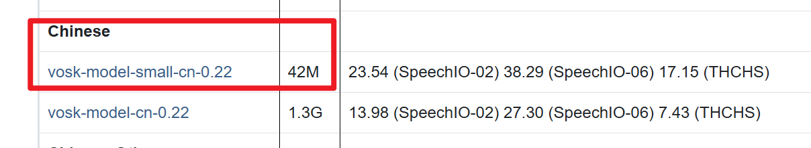</p><p data-lake-id="u31fd9a82" id="u31fd9a82"><span data-lake-id="uc638d145" id="uc638d145">将模型文件解压到文件夹</span></p><h3 data-lake-id="mHBiW" data-lake-index-type="2" id="mHBiW"><span data-lake-id="u5c5ee583" id="u5c5ee583">加载模型</span></h3><span class="yuque-card-unsupported">[codeblock]</span><h3 data-lake-id="fRRWm" data-lake-index-type="2" id="fRRWm"><span data-lake-id="u5d5a89f1" id="u5d5a89f1">语音识别</span></h3><span class="yuque-card-unsupported">[codeblock]</span><h3 data-lake-id="TIzuO" data-lake-index-type="2" id="TIzuO"><span data-lake-id="u29667c72" id="u29667c72">获取语音识别结果</span></h3><span class="yuque-card-unsupported">[codeblock]</span><h3 data-lake-id="rFJyu" id="rFJyu"><br/></h3><h2 data-lake-id="HojhT" data-lake-index-type="2" id="HojhT"><span data-lake-id="u9d94d904" id="u9d94d904">DeepSeek接入大模型</span></h2><h3 data-lake-id="PUKSL" data-lake-index-type="2" id="PUKSL"><span data-lake-id="u78daf4f1" id="u78daf4f1">注册硅基流动平台</span></h3><p data-lake-id="ue41562f3" id="ue41562f3"><span data-lake-id="u57ca764a" id="u57ca764a">单击如下连接，注册账号</span></p><p data-lake-id="u6e78afaf" id="u6e78afaf"><span data-lake-id="ue61abea1" id="ue61abea1">注册连接：</span><a data-lake-id="ue8639cfb" href="https://cloud.siliconflow.cn/i/2hEJQLDl" id="ue8639cfb" rel="noopener noreferrer" target="_blank"><span data-lake-id="u17f9bdc8" id="u17f9bdc8">https://cloud.siliconflow.cn/i/2hEJQLDl</span></a></p><p data-lake-id="ue2ceacf5" id="ue2ceacf5">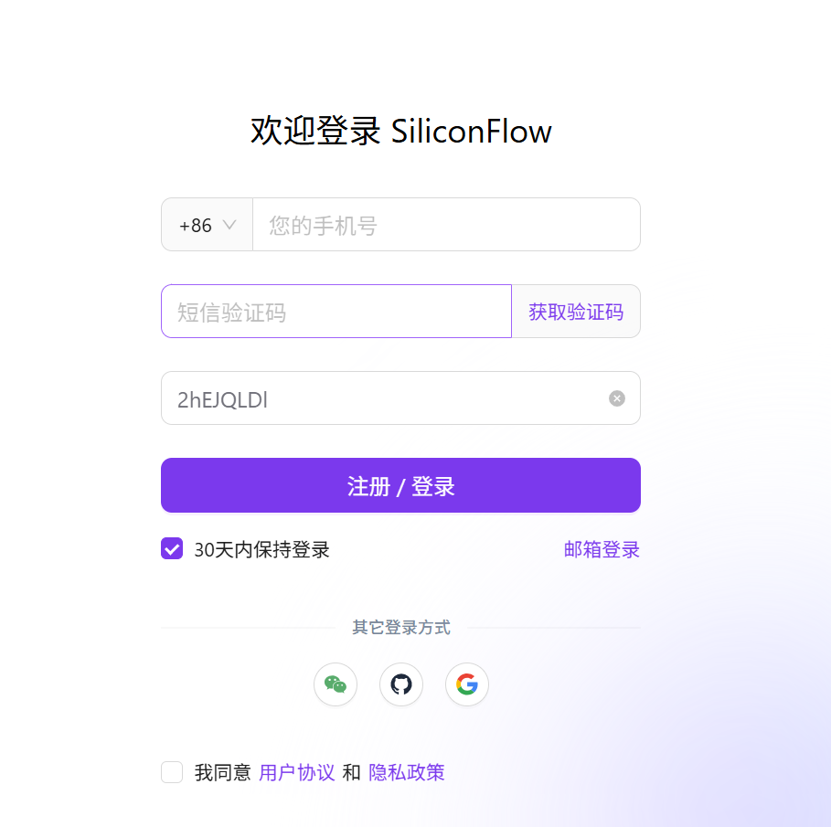</p><h3 data-lake-id="QXnfT" data-lake-index-type="2" id="QXnfT"><span data-lake-id="u6fad4c4a" id="u6fad4c4a">随便找个免费模型</span></h3><p data-lake-id="ucb56e0a8" id="ucb56e0a8"><span data-lake-id="u4304de0d" id="u4304de0d">我是学生，我没钱，所以我选免费大模型</span></p><p data-lake-id="u0d8c1e61" id="u0d8c1e61">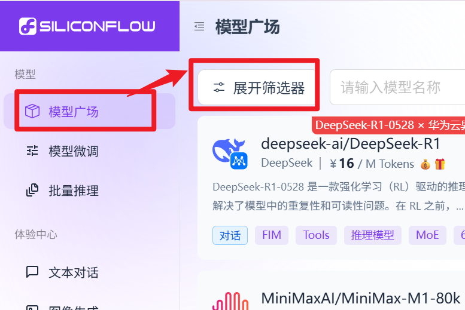</p><p data-lake-id="ua857492a" id="ua857492a">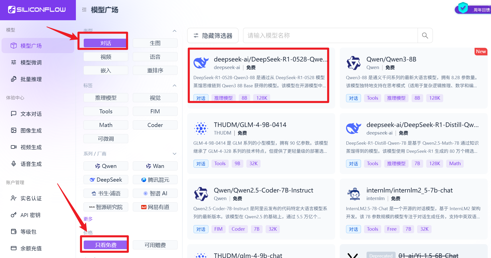</p><h3 data-lake-id="NF0Sn" data-lake-index-type="2" id="NF0Sn"><span data-lake-id="u20d1b462" id="u20d1b462">查看API文档</span></h3><p data-lake-id="u9cddbadc" id="u9cddbadc"><span data-lake-id="u101e9af5" id="u101e9af5">单击大模型，淡出API文档选项</span></p><p data-lake-id="u816796a4" id="u816796a4">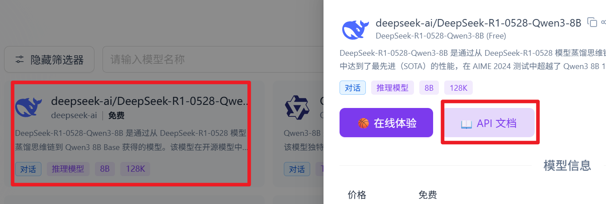</p><p data-lake-id="ua37c7f6f" id="ua37c7f6f"><span data-lake-id="u6727da9f" id="u6727da9f">单击Try it 跳转到尝试页面</span></p><p data-lake-id="u9230dd13" id="u9230dd13">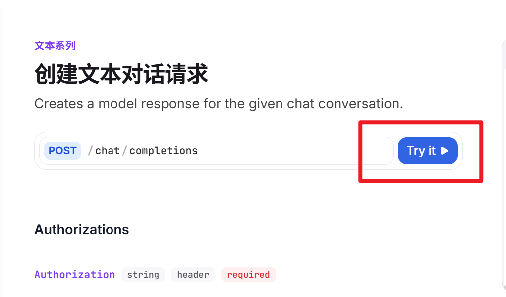</p><h4 data-lake-id="QoeY3" data-lake-index-type="2" id="QoeY3"><span data-lake-id="u696e34c7" id="u696e34c7">选择免费大模型</span></h4><p data-lake-id="ue6f567ff" id="ue6f567ff"><span data-lake-id="u05f3bdae" id="u05f3bdae">选择我们刚才看到的免费大模型</span></p><p data-lake-id="udee69936" id="udee69936"><span data-lake-id="uad3a61b4" id="uad3a61b4" style="color: #DF2A3F">!!!!!!!!!!!!!!!!!!!!!!!!!!!!!!!!!!!记住Send按钮，先不要单击Send!!!!!!!!!!!!!!!!!!!!!!!!!!!!!!!!!!!!!</span></p><p data-lake-id="ucf72ed5d" id="ucf72ed5d"><span data-lake-id="ue8dac057" id="ue8dac057" style="color: #DF2A3F">!!!!!!!!!!!!!!!!!!!!!!!!!!!!!!!!!!!记住Send按钮，先不要单击Send!!!!!!!!!!!!!!!!!!!!!!!!!!!!!!!!!!!!!</span></p><p data-lake-id="uf53b7342" id="uf53b7342"><span data-lake-id="u7698cb00" id="u7698cb00" style="color: #DF2A3F">!!!!!!!!!!!!!!!!!!!!!!!!!!!!!!!!!!!记住Send按钮，先不要单击Send!!!!!!!!!!!!!!!!!!!!!!!!!!!!!!!!!!!!!</span></p><p data-lake-id="u49d5bf44" id="u49d5bf44">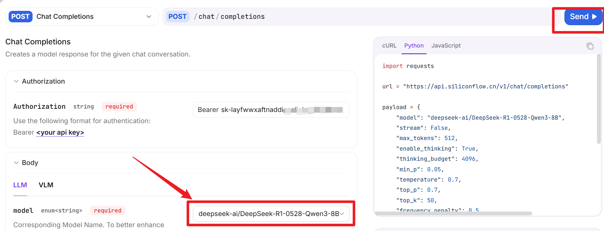</p><h4 data-lake-id="Xlc8X" data-lake-index-type="2" id="Xlc8X"><span data-lake-id="u7ff5ec1d" id="u7ff5ec1d">添加消息</span></h4><p data-lake-id="u3ce85f6d" id="u3ce85f6d"><span data-lake-id="ude8b9e8f" id="ude8b9e8f">单击添加消息</span></p><p data-lake-id="u1149e597" id="u1149e597"></p><h4 data-lake-id="OnYzq" data-lake-index-type="2" id="OnYzq"><span data-lake-id="uf9010b76" id="uf9010b76">输入消息内容</span></h4><p data-lake-id="u5e15cf40" id="u5e15cf40"><span data-lake-id="u007b0e65" id="u007b0e65">输入消息内容，并复制代码到Vscode</span></p><p data-lake-id="u514b5ade" id="u514b5ade">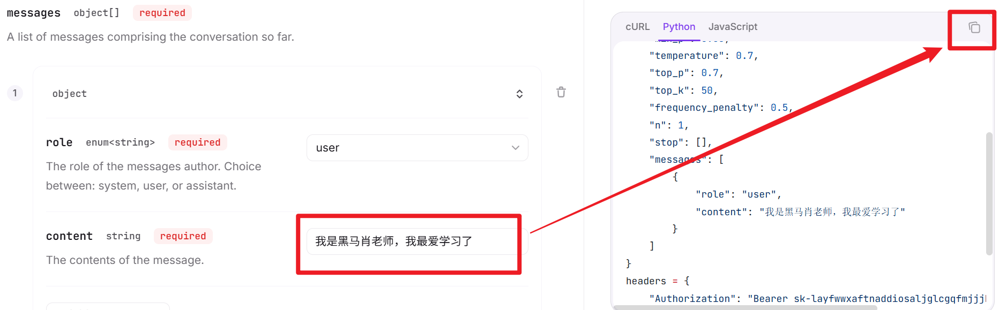</p><p data-lake-id="u1cd5a7e1" id="u1cd5a7e1"><br/></p><span class="yuque-card-unsupported">[codeblock]</span><h4 data-lake-id="oJ9Ry" data-lake-index-type="2" id="oJ9Ry"><span data-lake-id="u9126809e" id="u9126809e">单击Send</span></h4><p data-lake-id="u4be58ccc" id="u4be58ccc"><span data-lake-id="u4576df35" id="u4576df35" style="color: #DF2A3F">!!!!!!!!!!!!!!!!!!!!!!!!!!!!!!!!!!!单击Send,查看结果!!!!!!!!!!!!!!!!!!!!!!!!!!!!!!!!!!!!!</span></p><p data-lake-id="u835fa0af" id="u835fa0af"><span data-lake-id="u1da076a3" id="u1da076a3" style="color: #DF2A3F">!!!!!!!!!!!!!!!!!!!!!!!!!!!!!!!!!!!单击Send,查看结果!!!!!!!!!!!!!!!!!!!!!!!!!!!!!!!!!!!!!</span></p><p data-lake-id="u6e2b83be" id="u6e2b83be"><span data-lake-id="u42d14c42" id="u42d14c42" style="color: #DF2A3F">!!!!!!!!!!!!!!!!!!!!!!!!!!!!!!!!!!!单击Send,查看结果!!!!!!!!!!!!!!!!!!!!!!!!!!!!!!!!!!!!!</span></p><p data-lake-id="u3714427f" id="u3714427f"><span data-lake-id="uab528341" id="uab528341" style="color: #000000">发现发送失败，没关系，</span><span data-lake-id="ua33a9ddf" id="ua33a9ddf" style="color: #DF2A3F; background-color: #FBDE28">将代码复制到vscode中运行</span><span data-lake-id="u9abec53c" id="u9abec53c" style="color: #000000">，删掉报错提示得字段，得到如下结果</span></p><span class="yuque-card-unsupported">[codeblock]</span><h4 data-lake-id="V9A5U" data-lake-index-type="2" id="V9A5U"><span data-lake-id="u584a5514" id="u584a5514">分析结果</span></h4><p data-lake-id="u6e17eb8b" id="u6e17eb8b"><span data-lake-id="u0206f7ba" id="u0206f7ba">打开在线格式化工具：</span><a data-lake-id="u3cf152df" href="https://www.bejson.com/" id="u3cf152df" rel="noopener noreferrer" target="_blank"><span data-lake-id="u56a3f3bb" id="u56a3f3bb">https://www.bejson.com/</span></a><span data-lake-id="ubf0e5bd4" id="ubf0e5bd4"> </span></p><p data-lake-id="ue3621f5d" id="ue3621f5d"><span data-lake-id="ua751189a" id="ua751189a">从结果中，我们可以看到，我们已经成功与大模型进行了对话</span></p><p data-lake-id="uaf746b15" id="uaf746b15">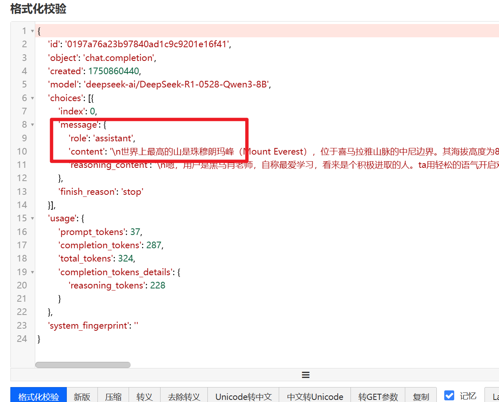</p><h4 data-lake-id="r3Mrf" data-lake-index-type="2" id="r3Mrf"><span data-lake-id="u91d7de51" id="u91d7de51">连续对话</span></h4><p data-lake-id="u8c972701" id="u8c972701"><span data-lake-id="u788d7a60" id="u788d7a60">所谓连续对话，就是我们连续与大模型对话，大模型能够知道历史聊天记录</span></p><p data-lake-id="ucae6e859" id="ucae6e859"><span data-lake-id="u9229254f" id="u9229254f">例如：</span></p><p data-lake-id="u859d99e1" id="u859d99e1"><span data-lake-id="ua268cd3a" id="ua268cd3a">第一次我说： 请问世界上最高的山是哪座？</span></p><p data-lake-id="u8accaf78" id="u8accaf78"><span data-lake-id="u2da1975d" id="u2da1975d">大模型回答： 珠穆朗玛峰</span></p><p data-lake-id="u87783bcd" id="u87783bcd"><span data-lake-id="u51da798b" id="u51da798b">第二次我说：那第二高的呢？</span></p><p data-lake-id="ud6776d26" id="ud6776d26"><span data-lake-id="u0640311b" id="u0640311b">在我第二次问的时候，我并没有明确第二高的是山，还是楼，还是人，要想让大模型知道历史的问答，我们每次请求大模型的时候，都需要将历史问答携带给大模型</span></p><p data-lake-id="u76172f6d" id="u76172f6d"><span data-lake-id="u712ae7c9" id="u712ae7c9">​</span><br/></p><ol list="u054592d1"><li data-lake-id="u796518c1" fid="ue9935ff8" id="u796518c1"><span data-lake-id="uf6095465" id="uf6095465">第一次我们给大模型发送的信息是</span></li></ol><span class="yuque-card-unsupported">[codeblock]</span><ol list="ue90ca7c5" start="2"><li data-lake-id="u61992903" fid="u58be61e4" id="u61992903"><span data-lake-id="u53f7cb31" id="u53f7cb31">大模型给我们返回了,注意这里面的角色</span></li></ol><span class="yuque-card-unsupported">[codeblock]</span><ol list="u4d800092" start="3"><li data-lake-id="u6ab62798" fid="u5ec07c72" id="u6ab62798"><span data-lake-id="u21e638dc" id="u21e638dc">那么当我们再次给大模型发消息时，我们应该带上前两次的消息，现在我的第二个问题是：</span></li></ol><p data-lake-id="uf6184602" id="uf6184602"><span data-lake-id="u662066ef" id="u662066ef" style="color: #DF2A3F; background-color: #FBDE28">那第二高的呢？</span></p><p data-lake-id="u870ffe01" id="u870ffe01"><span data-lake-id="uf06bfd1c" id="uf06bfd1c" style="color: #000000">此时，要想让大模型知道第二高指的的是什么，我们</span><span data-lake-id="u2a17b52a" id="u2a17b52a" style="color: #000000; background-color: #FBDE28">需要将所有对话信息都带上</span></p><span class="yuque-card-unsupported">[codeblock]</span><h4 data-lake-id="BU1SV" data-lake-index-type="2" id="BU1SV"><span data-lake-id="u46726636" id="u46726636">分析结果</span></h4><span class="yuque-card-unsupported">[codeblock]</span><p data-lake-id="u0a43e351" id="u0a43e351">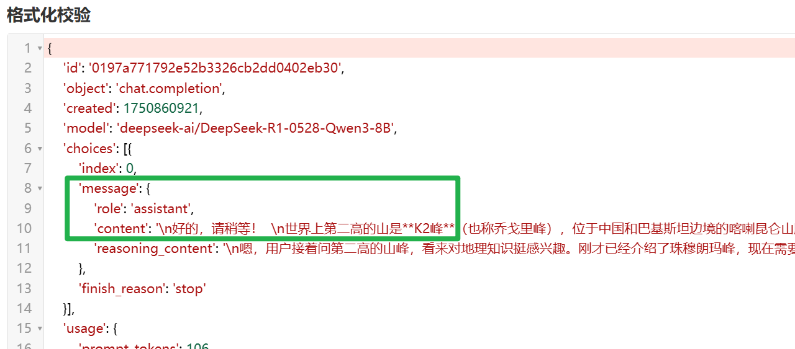</p><p data-lake-id="uded9ae4b" id="uded9ae4b"><span data-lake-id="udbf57c00" id="udbf57c00">从结果我们可以看出，大模型已经正确回答了</span><strong><span data-lake-id="uebf7d140" id="uebf7d140" style="color: #DF2A3F; background-color: #FBDE28">那第二高的呢？</span></strong><span data-lake-id="u12d5dfba" id="u12d5dfba" style="color: #000000; background-color: #FFFFFF">这个问题，至此我们已经掌握了如何与大模型对话，以及如何与大模型连续对话。</span></p><h2 data-lake-id="GqlbO" data-lake-index-type="2" id="GqlbO"><span data-lake-id="u53053522" id="u53053522">离线语音合成edge_tts</span></h2><h3 data-lake-id="lnzbF" data-lake-index-type="2" id="lnzbF"><span data-lake-id="u079a6749" id="u079a6749">安装</span></h3><span class="yuque-card-unsupported">[codeblock]</span><h3 data-lake-id="lzzuW" data-lake-index-type="2" id="lzzuW"><span data-lake-id="ub4536548" id="ub4536548">示例代码</span></h3><p data-lake-id="u0083afab" id="u0083afab"><span data-lake-id="uc1f3319c" id="uc1f3319c">先用edge_tts生成语音文件</span></p><span class="yuque-card-unsupported">[codeblock]</span><p data-lake-id="uc5d46a9b" id="uc5d46a9b"><span data-lake-id="uae13b162" id="uae13b162">然后再调用playsound将音频数据播放出来</span></p><span class="yuque-card-unsupported">[codeblock]</span><p data-lake-id="u125aa134" id="u125aa134"><span data-lake-id="uaf735234" id="uaf735234">记得协程的调用方式</span></p><span class="yuque-card-unsupported">[codeblock]</span><p data-lake-id="ub92b7de0" id="ub92b7de0"><br/></p><h3 data-lake-id="bXBDL" data-lake-index-type="2" id="bXBDL"><span data-lake-id="u86c7a18c" id="u86c7a18c">常见的中文语音</span></h3><p data-lake-id="u48f07925" id="u48f07925"><span data-lake-id="u52f8f05b" id="u52f8f05b">选择一个自己喜欢的声音数据即可</span></p><table class="lake-table" data-lake-id="jY5Vc" id="jY5Vc" margin="true" style="width: 820px"><colgroup><col width="259"/><col width="187"/><col width="187"/><col width="187"/></colgroup><tbody><tr data-lake-id="u7adbfbbc" id="u7adbfbbc"><td data-lake-id="u8f7bee97" id="u8f7bee97"><p data-lake-id="uea96667a" id="uea96667a" style="text-align: left"><strong><span class="lake-fontsize-12" data-lake-id="u0337402d" id="u0337402d" style="color: rgb(64, 64, 64)">简称</span></strong></p></td><td data-lake-id="u40007cc6" id="u40007cc6"><p data-lake-id="u9380dc20" id="u9380dc20" style="text-align: left"><strong><span class="lake-fontsize-12" data-lake-id="uea9e69b5" id="uea9e69b5" style="color: rgb(64, 64, 64)">语言</span></strong></p></td><td data-lake-id="u02287bef" id="u02287bef"><p data-lake-id="uea85c7af" id="uea85c7af" style="text-align: left"><strong><span class="lake-fontsize-12" data-lake-id="u5c0eff99" id="u5c0eff99" style="color: rgb(64, 64, 64)">性别</span></strong></p></td><td data-lake-id="u5f86f20a" id="u5f86f20a"><p data-lake-id="u5b0e4b5f" id="u5b0e4b5f" style="text-align: left"><strong><span class="lake-fontsize-12" data-lake-id="u32de7898" id="u32de7898" style="color: rgb(64, 64, 64)">风格</span></strong></p></td></tr><tr data-lake-id="u5ee41537" id="u5ee41537"><td data-lake-id="uf67fb804" id="uf67fb804"><p data-lake-id="ubfe54de1" id="ubfe54de1"><code data-lake-id="ue81d9323" id="ue81d9323"><strong><span class="lake-fontsize-12" data-lake-id="u106f0df0" id="u106f0df0" style="color: rgb(64, 64, 64); background-color: rgb(236, 236, 236)">zh-CN-YunxiNeural</span></strong></code></p></td><td data-lake-id="u71ab215d" id="u71ab215d"><p data-lake-id="u98867997" id="u98867997"><span class="lake-fontsize-12" data-lake-id="u44e82dff" id="u44e82dff" style="color: rgb(64, 64, 64)">中文（普通话）</span></p></td><td data-lake-id="u89ab0485" id="u89ab0485"><p data-lake-id="ua0f5561e" id="ua0f5561e"><span class="lake-fontsize-12" data-lake-id="u9336c34f" id="u9336c34f" style="color: rgb(64, 64, 64)">男</span></p></td><td data-lake-id="u5a009082" id="u5a009082"><p data-lake-id="u9257d6e8" id="u9257d6e8"><span class="lake-fontsize-12" data-lake-id="u3992a58c" id="u3992a58c" style="color: rgb(64, 64, 64)">年轻、自然</span></p></td></tr><tr data-lake-id="ue12933e7" id="ue12933e7"><td data-lake-id="u5abba822" id="u5abba822"><p data-lake-id="u30be29d0" id="u30be29d0"><code data-lake-id="ub992f8d3" id="ub992f8d3"><strong><span class="lake-fontsize-12" data-lake-id="u0727ae3a" id="u0727ae3a" style="color: rgb(64, 64, 64); background-color: rgb(236, 236, 236)">zh-CN-YunyangNeural</span></strong></code></p></td><td data-lake-id="ued8b0e39" id="ued8b0e39"><p data-lake-id="u4d658b72" id="u4d658b72"><span class="lake-fontsize-12" data-lake-id="ucc90276e" id="ucc90276e" style="color: rgb(64, 64, 64)">中文（普通话）</span></p></td><td data-lake-id="u959ee2d9" id="u959ee2d9"><p data-lake-id="u9817e677" id="u9817e677"><span class="lake-fontsize-12" data-lake-id="u41ac2e0f" id="u41ac2e0f" style="color: rgb(64, 64, 64)">男</span></p></td><td data-lake-id="uaa14b878" id="uaa14b878"><p data-lake-id="u383b5ce3" id="u383b5ce3"><span class="lake-fontsize-12" data-lake-id="u904a0ff6" id="u904a0ff6" style="color: rgb(64, 64, 64)">新闻播报风格</span></p></td></tr><tr data-lake-id="ud2c7fb6f" id="ud2c7fb6f"><td data-lake-id="udb971397" id="udb971397"><p data-lake-id="ub769517e" id="ub769517e"><code data-lake-id="u2b4dc74d" id="u2b4dc74d"><strong><span class="lake-fontsize-12" data-lake-id="u48803ad7" id="u48803ad7" style="color: rgb(64, 64, 64); background-color: rgb(236, 236, 236)">zh-CN-XiaoxiaoNeural</span></strong></code></p></td><td data-lake-id="u4f598419" id="u4f598419"><p data-lake-id="u21742dfa" id="u21742dfa"><span class="lake-fontsize-12" data-lake-id="u09da6a66" id="u09da6a66" style="color: rgb(64, 64, 64)">中文（普通话）</span></p></td><td data-lake-id="u03070d5e" id="u03070d5e"><p data-lake-id="ufe6ed096" id="ufe6ed096"><span class="lake-fontsize-12" data-lake-id="u8987fa7f" id="u8987fa7f" style="color: rgb(64, 64, 64)">女</span></p></td><td data-lake-id="ueac50009" id="ueac50009"><p data-lake-id="u1fbcf97e" id="u1fbcf97e"><span class="lake-fontsize-12" data-lake-id="u0ed126c0" id="u0ed126c0" style="color: rgb(64, 64, 64)">柔和、多情感</span></p></td></tr><tr data-lake-id="u22b810eb" id="u22b810eb"><td data-lake-id="u775a5884" id="u775a5884"><p data-lake-id="u2ba2a1c4" id="u2ba2a1c4"><code data-lake-id="u832c8510" id="u832c8510"><strong><span class="lake-fontsize-12" data-lake-id="u12259317" id="u12259317" style="color: rgb(64, 64, 64); background-color: rgb(236, 236, 236)">zh-CN-XiaoyiNeural</span></strong></code></p></td><td data-lake-id="u0cf1bd24" id="u0cf1bd24"><p data-lake-id="u99c67ec4" id="u99c67ec4"><span class="lake-fontsize-12" data-lake-id="ued65fc3b" id="ued65fc3b" style="color: rgb(64, 64, 64)">中文（普通话）</span></p></td><td data-lake-id="ueb8c4e1f" id="ueb8c4e1f"><p data-lake-id="uba5a2fcf" id="uba5a2fcf"><span class="lake-fontsize-12" data-lake-id="u1c381707" id="u1c381707" style="color: rgb(64, 64, 64)">女</span></p></td><td data-lake-id="u1acc0438" id="u1acc0438"><p data-lake-id="ud0f63f71" id="ud0f63f71"><span class="lake-fontsize-12" data-lake-id="u623899a5" id="u623899a5" style="color: rgb(64, 64, 64)">活泼、年轻</span></p></td></tr><tr data-lake-id="u79383734" id="u79383734"><td data-lake-id="ucc9ecf4e" id="ucc9ecf4e"><p data-lake-id="uea0342cb" id="uea0342cb"><code data-lake-id="ueba8525f" id="ueba8525f"><strong><span class="lake-fontsize-12" data-lake-id="uc3d8d8f1" id="uc3d8d8f1" style="color: rgb(64, 64, 64); background-color: rgb(236, 236, 236)">zh-HK-HiuGaaiNeural</span></strong></code></p></td><td data-lake-id="u03565cd8" id="u03565cd8"><p data-lake-id="ufcbc1e0b" id="ufcbc1e0b"><span class="lake-fontsize-12" data-lake-id="u71f0bae4" id="u71f0bae4" style="color: rgb(64, 64, 64)">中文（粤语）</span></p></td><td data-lake-id="udb6f6bf8" id="udb6f6bf8"><p data-lake-id="u5784864b" id="u5784864b"><span class="lake-fontsize-12" data-lake-id="u66afd206" id="u66afd206" style="color: rgb(64, 64, 64)">女</span></p></td><td data-lake-id="u6654c6af" id="u6654c6af"><p data-lake-id="ud177bb7e" id="ud177bb7e"><span class="lake-fontsize-12" data-lake-id="u26a5ccee" id="u26a5ccee" style="color: rgb(64, 64, 64)">自然</span></p></td></tr><tr data-lake-id="uc5366680" id="uc5366680"><td data-lake-id="u336c6a39" id="u336c6a39"><p data-lake-id="u69e063d6" id="u69e063d6"><code data-lake-id="ub203ff87" id="ub203ff87"><strong><span class="lake-fontsize-12" data-lake-id="u0faca1ff" id="u0faca1ff" style="color: rgb(64, 64, 64); background-color: rgb(236, 236, 236)">zh-TW-HsiaoYuNeural</span></strong></code></p></td><td data-lake-id="ub4d88f6e" id="ub4d88f6e"><p data-lake-id="u59dadbdd" id="u59dadbdd"><span class="lake-fontsize-12" data-lake-id="u4013964a" id="u4013964a" style="color: rgb(64, 64, 64)">中文（台湾）</span></p></td><td data-lake-id="u2d90092c" id="u2d90092c"><p data-lake-id="u524ca5f6" id="u524ca5f6"><span class="lake-fontsize-12" data-lake-id="u05b0456e" id="u05b0456e" style="color: rgb(64, 64, 64)">女</span></p></td><td data-lake-id="u4349d8a6" id="u4349d8a6"><p data-lake-id="uffbddb2f" id="uffbddb2f"><span class="lake-fontsize-12" data-lake-id="u2fdc618d" id="u2fdc618d" style="color: rgb(64, 64, 64)">温柔</span></p></td></tr></tbody></table><p data-lake-id="u374aeedd" id="u374aeedd"><br/></p><p data-lake-id="ua0cd8df0" id="ua0cd8df0"><br/></p><h2 data-lake-id="F4yZt" data-lake-index-type="2" id="F4yZt"><span data-lake-id="u4d01f8bc" id="u4d01f8bc">协程</span></h2><p data-lake-id="ud63d3762" id="ud63d3762" style="text-align: center">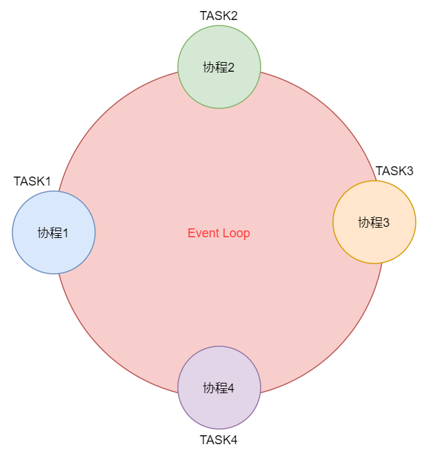</p><p data-lake-id="ubf2cd12e" id="ubf2cd12e"><span class="lake-fontsize-12" data-lake-id="ua6c93221" id="ua6c93221" style="color: rgb(64, 64, 64)">协程（Coroutine）是一种比线程更轻量级的并发编程模型，它通过</span><strong><span class="lake-fontsize-12" data-lake-id="ud6e3825b" id="ud6e3825b" style="color: rgb(64, 64, 64)">协作式多任务</span></strong><span class="lake-fontsize-12" data-lake-id="ua0eec1d0" id="ua0eec1d0" style="color: rgb(64, 64, 64)">（而非抢占式）实现高效的并发执行。以下是协程的核心概念解析：</span></p><p data-lake-id="ub49940b7" id="ub49940b7"><span class="lake-fontsize-12" data-lake-id="uec75044a" id="uec75044a" style="color: rgb(64, 64, 64)">协程是</span><strong><span class="lake-fontsize-12" data-lake-id="ubae081e2" id="ubae081e2" style="color: rgb(64, 64, 64)">可暂停和恢复的执行单元</span></strong><span class="lake-fontsize-12" data-lake-id="uc35fc4a4" id="uc35fc4a4" style="color: rgb(64, 64, 64)">，具有以下特征：</span></p><ul list="u5395ffd5"><li data-lake-id="u6d43acaa" fid="u9acb99ed" id="u6d43acaa"><strong><span class="lake-fontsize-12" data-lake-id="u89742fe3" id="u89742fe3" style="color: rgb(64, 64, 64)">用户态调度</span></strong><span class="lake-fontsize-12" data-lake-id="u6816089e" id="u6816089e" style="color: rgb(64, 64, 64)">：由程序（而非操作系统）控制切换，无内核开销</span></li><li data-lake-id="ue4c0501b" fid="u9acb99ed" id="ue4c0501b"><strong><span class="lake-fontsize-12" data-lake-id="u31f07f44" id="u31f07f44" style="color: rgb(64, 64, 64)">单线程内并发</span></strong><span class="lake-fontsize-12" data-lake-id="u85adb5c6" id="u85adb5c6" style="color: rgb(64, 64, 64)">：多个协程共享同一个线程资源</span></li><li data-lake-id="u3b36469d" fid="u9acb99ed" id="u3b36469d"><strong><span class="lake-fontsize-12" data-lake-id="ud0978697" id="ud0978697" style="color: rgb(64, 64, 64)">异步非阻塞</span></strong><span class="lake-fontsize-12" data-lake-id="ua8618c41" id="ua8618c41" style="color: rgb(64, 64, 64)">：通过挂起（yield）避免等待时的CPU空转</span></li></ul><p data-lake-id="ufffc6c48" id="ufffc6c48"><span data-lake-id="u72324c56" id="u72324c56">​</span><br/></p><p data-lake-id="u67a759a6" id="u67a759a6"><span data-lake-id="u460f8677" id="u460f8677" style="color: rgb(64, 64, 64)">与线程/进程的对比</span></p><table class="lake-table" data-lake-id="N4AUX" id="N4AUX" margin="true" style="width: 654px"><colgroup><col width="93"/><col width="187"/><col width="187"/><col width="187"/></colgroup><tbody><tr data-lake-id="u7218e050" id="u7218e050"><td data-lake-id="ucbf191b9" id="ucbf191b9"><p data-lake-id="u00606a46" id="u00606a46" style="text-align: left"><strong><span class="lake-fontsize-12" data-lake-id="ueb0bf869" id="ueb0bf869" style="color: rgb(64, 64, 64)">维度</span></strong></p></td><td data-lake-id="u24fd33e5" id="u24fd33e5"><p data-lake-id="ude3bab77" id="ude3bab77" style="text-align: left"><strong><span class="lake-fontsize-12" data-lake-id="u358bbc50" id="u358bbc50" style="color: rgb(64, 64, 64)">协程</span></strong></p></td><td data-lake-id="uc4e9542d" id="uc4e9542d"><p data-lake-id="ua6285589" id="ua6285589" style="text-align: left"><strong><span class="lake-fontsize-12" data-lake-id="u9511bc7a" id="u9511bc7a" style="color: rgb(64, 64, 64)">线程</span></strong></p></td><td data-lake-id="ud46a6f5e" id="ud46a6f5e"><p data-lake-id="udba02a99" id="udba02a99" style="text-align: left"><strong><span class="lake-fontsize-12" data-lake-id="uf85deb11" id="uf85deb11" style="color: rgb(64, 64, 64)">进程</span></strong></p></td></tr><tr data-lake-id="uc7c022d7" id="uc7c022d7"><td data-lake-id="u94d4d42d" id="u94d4d42d"><p data-lake-id="u9e291c73" id="u9e291c73"><strong><span class="lake-fontsize-12" data-lake-id="u9965dea0" id="u9965dea0" style="color: rgb(64, 64, 64)">调度者</span></strong></p></td><td data-lake-id="u41e98990" id="u41e98990"><p data-lake-id="u548dd5cd" id="u548dd5cd"><span class="lake-fontsize-12" data-lake-id="u4b78675b" id="u4b78675b" style="color: rgb(64, 64, 64)">用户程序（事件循环）</span></p></td><td data-lake-id="uce13936e" id="uce13936e"><p data-lake-id="ua46569a6" id="ua46569a6"><span class="lake-fontsize-12" data-lake-id="udd691831" id="udd691831" style="color: rgb(64, 64, 64)">操作系统内核</span></p></td><td data-lake-id="u15a4410d" id="u15a4410d"><p data-lake-id="uc7d452b6" id="uc7d452b6"><span class="lake-fontsize-12" data-lake-id="ufbbaf9ab" id="ufbbaf9ab" style="color: rgb(64, 64, 64)">操作系统内核</span></p></td></tr><tr data-lake-id="ue5719771" id="ue5719771"><td data-lake-id="u57e7bed5" id="u57e7bed5"><p data-lake-id="u72423bba" id="u72423bba"><strong><span class="lake-fontsize-12" data-lake-id="ue6097cfd" id="ue6097cfd" style="color: rgb(64, 64, 64)">切换成本</span></strong></p></td><td data-lake-id="u0d0c397f" id="u0d0c397f"><p data-lake-id="u3063efb8" id="u3063efb8"><span class="lake-fontsize-12" data-lake-id="uc6fe287e" id="uc6fe287e" style="color: rgb(64, 64, 64)">0.1μs级（寄存器操作）</span></p></td><td data-lake-id="ud1e8a23e" id="ud1e8a23e"><p data-lake-id="u8b424096" id="u8b424096"><span class="lake-fontsize-12" data-lake-id="ufe55abf4" id="ufe55abf4" style="color: rgb(64, 64, 64)">1-10μs（内核态切换）</span></p></td><td data-lake-id="u9a6b65b0" id="u9a6b65b0"><p data-lake-id="u02962426" id="u02962426"><span class="lake-fontsize-12" data-lake-id="u82857e2a" id="u82857e2a" style="color: rgb(64, 64, 64)">1ms级（资源重分配）</span></p></td></tr><tr data-lake-id="u1daa2251" id="u1daa2251"><td data-lake-id="u94b56007" id="u94b56007"><p data-lake-id="u36dd8523" id="u36dd8523"><strong><span class="lake-fontsize-12" data-lake-id="uf7649f44" id="uf7649f44" style="color: rgb(64, 64, 64)">内存占用</span></strong></p></td><td data-lake-id="u4ddd809e" id="u4ddd809e"><p data-lake-id="u3922dbd0" id="u3922dbd0"><span class="lake-fontsize-12" data-lake-id="ubec26ef3" id="ubec26ef3" style="color: rgb(64, 64, 64)">KB级（独立栈帧）</span></p></td><td data-lake-id="uea3c3c9c" id="uea3c3c9c"><p data-lake-id="u20660cad" id="u20660cad"><span class="lake-fontsize-12" data-lake-id="u1fd47bf1" id="u1fd47bf1" style="color: rgb(64, 64, 64)">MB级（固定栈空间）</span></p></td><td data-lake-id="u1438f2e7" id="u1438f2e7"><p data-lake-id="u629e0f8b" id="u629e0f8b"><span class="lake-fontsize-12" data-lake-id="u461a0103" id="u461a0103" style="color: rgb(64, 64, 64)">GB级（独立地址空间）</span></p></td></tr><tr data-lake-id="udaa7e45a" id="udaa7e45a"><td data-lake-id="ubb543d43" id="ubb543d43"><p data-lake-id="ud268dc1e" id="ud268dc1e"><strong><span class="lake-fontsize-12" data-lake-id="u58cddefc" id="u58cddefc" style="color: rgb(64, 64, 64)">并发能力</span></strong></p></td><td data-lake-id="u232134de" id="u232134de"><p data-lake-id="ufd38f0d7" id="ufd38f0d7"><span class="lake-fontsize-12" data-lake-id="ud2292306" id="ud2292306" style="color: rgb(64, 64, 64)">单线程内数万并发</span></p></td><td data-lake-id="u8f9b6c16" id="u8f9b6c16"><p data-lake-id="u0bc14cc8" id="u0bc14cc8"><span class="lake-fontsize-12" data-lake-id="ucb417896" id="ucb417896" style="color: rgb(64, 64, 64)">数百-数千（受内核限制）</span></p></td><td data-lake-id="u423cfd60" id="u423cfd60"><p data-lake-id="u0b4a0c6c" id="u0b4a0c6c"><span class="lake-fontsize-12" data-lake-id="uf8edacf6" id="uf8edacf6" style="color: rgb(64, 64, 64)">数十个</span></p></td></tr></tbody></table><p data-lake-id="u260983b5" id="u260983b5"><span data-lake-id="ue4c0049b" id="ue4c0049b" style="color: rgb(64, 64, 64)">核心优势</span></p><ul list="u2455c32b"><li data-lake-id="u09880d05" fid="u01a7a0bb" id="u09880d05"><strong><span class="lake-fontsize-12" data-lake-id="u6f141005" id="u6f141005" style="color: rgb(64, 64, 64)">高性能IO并发</span></strong><span class="lake-fontsize-12" data-lake-id="uf6370e61" id="uf6370e61" style="color: rgb(64, 64, 64)">：单线程可处理数万网络连接（如Web服务器）</span></li><li data-lake-id="u75909f06" fid="u01a7a0bb" id="u75909f06"><strong><span class="lake-fontsize-12" data-lake-id="u15d21042" id="u15d21042" style="color: rgb(64, 64, 64)">无锁编程</span></strong><span class="lake-fontsize-12" data-lake-id="uccc4b74a" id="uccc4b74a" style="color: rgb(64, 64, 64)">：避免多线程的竞态条件问题</span></li><li data-lake-id="u4c1b412b" fid="u01a7a0bb" id="u4c1b412b"><strong><span class="lake-fontsize-12" data-lake-id="ud3498257" id="ud3498257" style="color: rgb(64, 64, 64)">资源高效</span></strong><span class="lake-fontsize-12" data-lake-id="ueab20a70" id="ueab20a70" style="color: rgb(64, 64, 64)">：内存消耗远低于线程</span></li></ul><p data-lake-id="u0ec0d41e" id="u0ec0d41e"><span data-lake-id="uf15b7f77" id="uf15b7f77">​</span><br/></p><p data-lake-id="u5c19029b" id="u5c19029b"><span data-lake-id="ubce08231" id="ubce08231" style="color: rgb(64, 64, 64)">典型应用场景</span></p><ol list="u60b3e2cc"><li data-lake-id="u2919e2df" fid="ua3d75afe" id="u2919e2df"><strong><span class="lake-fontsize-12" data-lake-id="u8fb65044" id="u8fb65044" style="color: rgb(64, 64, 64)">高并发服务</span></strong><span class="lake-fontsize-12" data-lake-id="u6fe8836b" id="u6fe8836b" style="color: rgb(64, 64, 64)">：Web服务器（FastAPI）、即时通讯</span></li><li data-lake-id="uec368277" fid="ua3d75afe" id="uec368277"><strong><span class="lake-fontsize-12" data-lake-id="u650720ed" id="u650720ed" style="color: rgb(64, 64, 64)">异步IO操作</span></strong><span class="lake-fontsize-12" data-lake-id="u14d620e2" id="u14d620e2" style="color: rgb(64, 64, 64)">：数据库访问、文件读写</span></li><li data-lake-id="ued71cb8e" fid="ua3d75afe" id="ued71cb8e"><strong><span class="lake-fontsize-12" data-lake-id="u1f0386f7" id="u1f0386f7" style="color: rgb(64, 64, 64)">事件驱动系统</span></strong><span class="lake-fontsize-12" data-lake-id="u2d6d474a" id="u2d6d474a" style="color: rgb(64, 64, 64)">：GUI应用、游戏循环</span></li><li data-lake-id="u03e7338c" fid="ua3d75afe" id="u03e7338c"><strong><span class="lake-fontsize-12" data-lake-id="ub8c0e635" id="ub8c0e635" style="color: rgb(64, 64, 64)">数据流处理</span></strong><span class="lake-fontsize-12" data-lake-id="u629b7df9" id="u629b7df9" style="color: rgb(64, 64, 64)">：生成器管道</span></li></ol><p data-lake-id="u4ae8a9f4" id="u4ae8a9f4"><br/></p><h3 data-lake-id="gNOVu" data-lake-index-type="2" id="gNOVu"><span data-lake-id="u314d9c6c" id="u314d9c6c">三大核心</span></h3><h4 data-lake-id="vGNF6" data-lake-index-type="2" id="vGNF6"><span data-lake-id="ue2c53a87" id="ue2c53a87">协程函数coroutine</span></h4><p data-lake-id="udf959af1" id="udf959af1"><strong><span data-lake-id="uaca5c9ed" id="uaca5c9ed" style="color: rgb(64, 64, 64)">作用</span></strong></p><ul list="ud665cc3a"><li data-lake-id="ud97fdaae" fid="uc45be425" id="ud97fdaae"><strong><span class="lake-fontsize-12" data-lake-id="u02447ef1" id="u02447ef1" style="color: rgb(64, 64, 64)">定义异步操作单元</span></strong><span class="lake-fontsize-12" data-lake-id="u0757d494" id="u0757d494" style="color: rgb(64, 64, 64)">：协程是一个可暂停和恢复的函数（通过</span><span class="lake-fontsize-12" data-lake-id="u7c0d05e9" id="u7c0d05e9" style="color: rgb(64, 64, 64)"> </span><code data-lake-id="u5ee618d2" id="u5ee618d2"><strong><span class="lake-fontsize-12" data-lake-id="u31b05bfb" id="u31b05bfb" style="color: rgb(64, 64, 64); background-color: rgb(236, 236, 236)">async def</span></strong></code><span class="lake-fontsize-12" data-lake-id="u69361a36" id="u69361a36" style="color: rgb(64, 64, 64)"> </span><span class="lake-fontsize-12" data-lake-id="u555909e3" id="u555909e3" style="color: rgb(64, 64, 64)">定义），用于封装需要异步执行的逻辑（如IO操作）。</span></li><li data-lake-id="uc8fba8ad" fid="uc45be425" id="uc8fba8ad"><strong><span class="lake-fontsize-12" data-lake-id="u1f3efc23" id="u1f3efc23" style="color: rgb(64, 64, 64)">非阻塞挂起</span></strong><span class="lake-fontsize-12" data-lake-id="uf35b157f" id="uf35b157f" style="color: rgb(64, 64, 64)">：通过</span><span class="lake-fontsize-12" data-lake-id="u2b83fcf0" id="u2b83fcf0" style="color: rgb(64, 64, 64)"> </span><code data-lake-id="u01d37a37" id="u01d37a37"><strong><span class="lake-fontsize-12" data-lake-id="u65f92c29" id="u65f92c29" style="color: rgb(64, 64, 64); background-color: rgb(236, 236, 236)">await</span></strong></code><span class="lake-fontsize-12" data-lake-id="u97ae2eac" id="u97ae2eac" style="color: rgb(64, 64, 64)"> </span><span class="lake-fontsize-12" data-lake-id="u3b97304e" id="u3b97304e" style="color: rgb(64, 64, 64)">表达式主动让出控制权，避免阻塞线程。</span></li></ul><p data-lake-id="u4c1bcace" id="u4c1bcace"><strong><span data-lake-id="uc79375c1" id="uc79375c1" style="color: rgb(64, 64, 64)">特点</span></strong></p><ul list="u4d6d3eaf"><li data-lake-id="uba696717" fid="u51b04a81" id="uba696717"><strong><span class="lake-fontsize-12" data-lake-id="u90c58b8c" id="u90c58b8c" style="color: rgb(64, 64, 64)">语法标记</span></strong><span class="lake-fontsize-12" data-lake-id="u4c1c8bc5" id="u4c1c8bc5" style="color: rgb(64, 64, 64)">：用</span><span class="lake-fontsize-12" data-lake-id="u0c81ba52" id="u0c81ba52" style="color: rgb(64, 64, 64)"> </span><code data-lake-id="u129d1120" id="u129d1120"><strong><span class="lake-fontsize-12" data-lake-id="u222efa57" id="u222efa57" style="color: rgb(64, 64, 64); background-color: rgb(236, 236, 236)">async/await</span></strong></code><span class="lake-fontsize-12" data-lake-id="ud580191a" id="ud580191a" style="color: rgb(64, 64, 64)"> </span><span class="lake-fontsize-12" data-lake-id="u3b9f2a7a" id="u3b9f2a7a" style="color: rgb(64, 64, 64)">声明</span></li><li data-lake-id="u11d9a92d" fid="u51b04a81" id="u11d9a92d"><strong><span class="lake-fontsize-12" data-lake-id="u0cd245ee" id="u0cd245ee" style="color: rgb(64, 64, 64)">单向执行流</span></strong><span class="lake-fontsize-12" data-lake-id="u8b5da5df" id="u8b5da5df" style="color: rgb(64, 64, 64)">：类似函数调用，但能中途挂起</span></li><li data-lake-id="uee62e2d9" fid="u51b04a81" id="uee62e2d9"><strong><span class="lake-fontsize-12" data-lake-id="ue6d71a9c" id="ue6d71a9c" style="color: rgb(64, 64, 64)">无自动调度</span></strong><span class="lake-fontsize-12" data-lake-id="uc15e43f4" id="uc15e43f4" style="color: rgb(64, 64, 64)">：需要被包装为 </span><code data-lake-id="u22a84b9f" id="u22a84b9f"><strong><span class="lake-fontsize-12" data-lake-id="u2d4b4852" id="u2d4b4852" style="color: rgb(64, 64, 64); background-color: rgb(236, 236, 236)">Task</span></strong></code><span class="lake-fontsize-12" data-lake-id="u399374f2" id="u399374f2" style="color: rgb(64, 64, 64)"> 或由事件循环驱动</span></li></ul><p data-lake-id="u6499583e" id="u6499583e"><strong><span data-lake-id="ub50b1cfd" id="ub50b1cfd" style="color: rgb(64, 64, 64)">示例</span></strong></p><span class="yuque-card-unsupported">[codeblock]</span><p data-lake-id="ub5f75dbe" id="ub5f75dbe"><br/></p><h4 data-lake-id="ee8Fy" data-lake-index-type="2" id="ee8Fy"><span data-lake-id="ueae16808" id="ueae16808">协程任务task</span></h4><p data-lake-id="ued19b36f" id="ued19b36f"><strong><span data-lake-id="u6fdb5d0a" id="u6fdb5d0a" style="color: rgb(64, 64, 64)">作用</span></strong></p><ul list="u442ed83c"><li data-lake-id="u43fa2fa9" fid="u651939ca" id="u43fa2fa9"><strong><span class="lake-fontsize-12" data-lake-id="u993cfb89" id="u993cfb89" style="color: rgb(64, 64, 64)">调度协程的执行</span></strong><span class="lake-fontsize-12" data-lake-id="u6ea55319" id="u6ea55319" style="color: rgb(64, 64, 64)">：将协程包装为可被事件循环管理的执行单元。如挂起，取消等操作</span></li><li data-lake-id="u06be7bbf" fid="u651939ca" id="u06be7bbf"><strong><span class="lake-fontsize-12" data-lake-id="u672bc8dd" id="u672bc8dd" style="color: rgb(64, 64, 64)">实现并发</span></strong><span class="lake-fontsize-12" data-lake-id="u38f00324" id="u38f00324" style="color: rgb(64, 64, 64)">：多个</span><span class="lake-fontsize-12" data-lake-id="u97be2a8d" id="u97be2a8d" style="color: rgb(64, 64, 64)"> </span><code data-lake-id="uc4de9740" id="uc4de9740"><strong><span class="lake-fontsize-12" data-lake-id="ubaa37e36" id="ubaa37e36" style="color: rgb(64, 64, 64); background-color: rgb(236, 236, 236)">Task</span></strong></code><span class="lake-fontsize-12" data-lake-id="uffb9ba22" id="uffb9ba22" style="color: rgb(64, 64, 64)"> </span><span class="lake-fontsize-12" data-lake-id="u5da1da21" id="u5da1da21" style="color: rgb(64, 64, 64)">可在单线程内交替执行，模拟并行。</span></li></ul><p data-lake-id="ue4f39c61" id="ue4f39c61"><strong><span data-lake-id="u5f3dd635" id="u5f3dd635" style="color: rgb(64, 64, 64)">特点</span></strong></p><ul list="u5fab3228"><li data-lake-id="u60273800" fid="u783b6f57" id="u60273800"><strong><span class="lake-fontsize-12" data-lake-id="uca4e9619" id="uca4e9619" style="color: rgb(64, 64, 64)">自动加入事件循环</span></strong><span class="lake-fontsize-12" data-lake-id="udef3c7e7" id="udef3c7e7" style="color: rgb(64, 64, 64)">：通过</span><span class="lake-fontsize-12" data-lake-id="u4a2a2b0a" id="u4a2a2b0a" style="color: rgb(64, 64, 64)"> </span><code data-lake-id="u9c9e94ca" id="u9c9e94ca"><strong><span class="lake-fontsize-12" data-lake-id="uacff59b4" id="uacff59b4" style="color: rgb(64, 64, 64); background-color: rgb(236, 236, 236)">asyncio.create_task()</span></strong></code><span class="lake-fontsize-12" data-lake-id="ua90a8edf" id="ua90a8edf" style="color: rgb(64, 64, 64)"> </span><span class="lake-fontsize-12" data-lake-id="u6d32e4bc" id="u6d32e4bc" style="color: rgb(64, 64, 64)">或</span><span class="lake-fontsize-12" data-lake-id="ubce32639" id="ubce32639" style="color: rgb(64, 64, 64)"> </span><code data-lake-id="u8e10da0f" id="u8e10da0f"><strong><span class="lake-fontsize-12" data-lake-id="ucbf2b943" id="ucbf2b943" style="color: rgb(64, 64, 64); background-color: rgb(236, 236, 236)">asyncio.gather()</span></strong></code><span class="lake-fontsize-12" data-lake-id="u6404daca" id="u6404daca" style="color: rgb(64, 64, 64)"> </span><span class="lake-fontsize-12" data-lake-id="u0468ce39" id="u0468ce39" style="color: rgb(64, 64, 64)">创建后立即被调度</span></li><li data-lake-id="u4a659e96" fid="u783b6f57" id="u4a659e96"><strong><span class="lake-fontsize-12" data-lake-id="u42ae0f70" id="u42ae0f70" style="color: rgb(64, 64, 64)">状态可追踪</span></strong><span class="lake-fontsize-12" data-lake-id="u19262c18" id="u19262c18" style="color: rgb(64, 64, 64)">：记录协程执行状态（运行中/完成/异常）</span></li><li data-lake-id="ud028e53d" fid="u783b6f57" id="ud028e53d"><strong><span class="lake-fontsize-12" data-lake-id="uad9d2e3f" id="uad9d2e3f" style="color: rgb(64, 64, 64)">支持取消</span></strong><span class="lake-fontsize-12" data-lake-id="uae62041c" id="uae62041c" style="color: rgb(64, 64, 64)">：可通过</span><span class="lake-fontsize-12" data-lake-id="u0d2eaad3" id="u0d2eaad3" style="color: rgb(64, 64, 64)"> </span><code data-lake-id="u062d4e31" id="u062d4e31"><strong><span class="lake-fontsize-12" data-lake-id="u4afd81ef" id="u4afd81ef" style="color: rgb(64, 64, 64); background-color: rgb(236, 236, 236)">task.cancel()</span></strong></code><span class="lake-fontsize-12" data-lake-id="u99ad6d3f" id="u99ad6d3f" style="color: rgb(64, 64, 64)"> </span><span class="lake-fontsize-12" data-lake-id="u9eb94428" id="u9eb94428" style="color: rgb(64, 64, 64)">中断执行</span></li></ul><p data-lake-id="uf1e26063" id="uf1e26063"><strong><span data-lake-id="ude9a82a2" id="ude9a82a2" style="color: rgb(64, 64, 64)">示例</span></strong></p><span class="yuque-card-unsupported">[codeblock]</span><p data-lake-id="u1c886d79" id="u1c886d79"><span data-lake-id="ub5b96892" id="ub5b96892">​</span><br/></p><h4 data-lake-id="FcCTg" data-lake-index-type="2" id="FcCTg"><span data-lake-id="ud1144eeb" id="ud1144eeb">事件循环event_loop</span></h4><p data-lake-id="ubade09e1" id="ubade09e1"><strong><span data-lake-id="uc4584c8b" id="uc4584c8b" style="color: rgb(64, 64, 64)">作用</span></strong></p><ul list="uf7e67a51"><li data-lake-id="u58405c10" fid="u28924000" id="u58405c10"><strong><span class="lake-fontsize-12" data-lake-id="u48a21307" id="u48a21307" style="color: rgb(64, 64, 64)">中央调度器</span></strong><span class="lake-fontsize-12" data-lake-id="ued4ddc9b" id="ued4ddc9b" style="color: rgb(64, 64, 64)">：管理和分配单线程的执行时间，驱动所有协程任务。</span></li><li data-lake-id="ubfef7dbd" fid="u28924000" id="ubfef7dbd"><strong><span class="lake-fontsize-12" data-lake-id="u27b259fb" id="u27b259fb" style="color: rgb(64, 64, 64)">IO多路复用</span></strong><span class="lake-fontsize-12" data-lake-id="u13ba4ce5" id="u13ba4ce5" style="color: rgb(64, 64, 64)">：监听外部事件（如socket读写、定时器），在就绪时恢复对应协程。</span></li></ul><p data-lake-id="ufc03d3dd" id="ufc03d3dd"><strong><span data-lake-id="ua32801d9" id="ua32801d9" style="color: rgb(64, 64, 64)">特点</span></strong></p><ul list="u50a2914d"><li data-lake-id="uebe69c99" fid="u505cb4a6" id="uebe69c99"><strong><span class="lake-fontsize-12" data-lake-id="ucbd445dc" id="ucbd445dc" style="color: rgb(64, 64, 64)">任务队列</span></strong><span class="lake-fontsize-12" data-lake-id="u5bc7765f" id="u5bc7765f" style="color: rgb(64, 64, 64)">：维护待执行的</span><span class="lake-fontsize-12" data-lake-id="u5a950b3f" id="u5a950b3f" style="color: rgb(64, 64, 64)"> </span><code data-lake-id="u97c4c0ca" id="u97c4c0ca"><strong><span class="lake-fontsize-12" data-lake-id="ucb24752e" id="ucb24752e" style="color: rgb(64, 64, 64); background-color: rgb(236, 236, 236)">Task</span></strong></code><span class="lake-fontsize-12" data-lake-id="u68a55239" id="u68a55239" style="color: rgb(64, 64, 64)"> </span><span class="lake-fontsize-12" data-lake-id="u5b4c09c7" id="u5b4c09c7" style="color: rgb(64, 64, 64)">集合</span></li><li data-lake-id="ueba1a5c8" fid="u505cb4a6" id="ueba1a5c8"><strong><span class="lake-fontsize-12" data-lake-id="u514f619a" id="u514f619a" style="color: rgb(64, 64, 64)">事件监听</span></strong><span class="lake-fontsize-12" data-lake-id="ucbf73536" id="ucbf73536" style="color: rgb(64, 64, 64)">：集成操作系统IO多路复用机制（如epoll、kqueue）</span></li><li data-lake-id="ub7c5512a" fid="u505cb4a6" id="ub7c5512a"><strong><span class="lake-fontsize-12" data-lake-id="u4c8dc5f9" id="u4c8dc5f9" style="color: rgb(64, 64, 64)">生命周期控制</span></strong><span class="lake-fontsize-12" data-lake-id="u28b4f607" id="u28b4f607" style="color: rgb(64, 64, 64)">：启动/停止整个异步程序</span></li></ul><p data-lake-id="u1e9185bc" id="u1e9185bc"><strong><span data-lake-id="u1eb508d5" id="u1eb508d5" style="color: rgb(64, 64, 64)">工作流程</span></strong></p><ol list="u119ba4b2"><li data-lake-id="u070bb606" fid="u23c12aa9" id="u070bb606"><span class="lake-fontsize-12" data-lake-id="ude45676d" id="ude45676d" style="color: rgb(64, 64, 64)">从任务队列选取就绪的</span><span class="lake-fontsize-12" data-lake-id="uf82810ff" id="uf82810ff" style="color: rgb(64, 64, 64)"> </span><code data-lake-id="u3ec2c180" id="u3ec2c180"><strong><span class="lake-fontsize-12" data-lake-id="ub53302db" id="ub53302db" style="color: rgb(64, 64, 64); background-color: rgb(236, 236, 236)">Task</span></strong></code></li><li data-lake-id="u2baa167b" fid="u23c12aa9" id="u2baa167b"><span class="lake-fontsize-12" data-lake-id="ua5e5e820" id="ua5e5e820" style="color: rgb(64, 64, 64)">执行到</span><span class="lake-fontsize-12" data-lake-id="u5e26c26b" id="u5e26c26b" style="color: rgb(64, 64, 64)"> </span><code data-lake-id="uf84bd612" id="uf84bd612"><strong><span class="lake-fontsize-12" data-lake-id="udfafc80f" id="udfafc80f" style="color: rgb(64, 64, 64); background-color: rgb(236, 236, 236)">await</span></strong></code><span class="lake-fontsize-12" data-lake-id="uf5f5f983" id="uf5f5f983" style="color: rgb(64, 64, 64)"> </span><span class="lake-fontsize-12" data-lake-id="u6f2b460e" id="u6f2b460e" style="color: rgb(64, 64, 64)">时挂起当前</span><span class="lake-fontsize-12" data-lake-id="u649b2863" id="u649b2863" style="color: rgb(64, 64, 64)"> </span><code data-lake-id="u3813671e" id="u3813671e"><strong><span class="lake-fontsize-12" data-lake-id="ue95028c7" id="ue95028c7" style="color: rgb(64, 64, 64); background-color: rgb(236, 236, 236)">Task</span></strong></code><span class="lake-fontsize-12" data-lake-id="u3ec80026" id="u3ec80026" style="color: rgb(64, 64, 64)">，检查IO事件</span></li><li data-lake-id="u0589353b" fid="u23c12aa9" id="u0589353b"><span class="lake-fontsize-12" data-lake-id="uc354289a" id="uc354289a" style="color: rgb(64, 64, 64)">当IO完成或定时器触发时，将关联的</span><span class="lake-fontsize-12" data-lake-id="ue24d1d41" id="ue24d1d41" style="color: rgb(64, 64, 64)"> </span><code data-lake-id="u4fa5aa58" id="u4fa5aa58"><strong><span class="lake-fontsize-12" data-lake-id="ub340f3ce" id="ub340f3ce" style="color: rgb(64, 64, 64); background-color: rgb(236, 236, 236)">Task</span></strong></code><span class="lake-fontsize-12" data-lake-id="u76e8623c" id="u76e8623c" style="color: rgb(64, 64, 64)"> </span><span class="lake-fontsize-12" data-lake-id="u8f6b8fed" id="u8f6b8fed" style="color: rgb(64, 64, 64)">重新加入队列</span></li><li data-lake-id="uff69591d" fid="u23c12aa9" id="uff69591d"><span class="lake-fontsize-12" data-lake-id="u9a1a3b96" id="u9a1a3b96" style="color: rgb(64, 64, 64)">重复上述过程直到所有任务完成</span></li></ol><p data-lake-id="u5d2eed84" id="u5d2eed84"><strong><span class="lake-fontsize-12" data-lake-id="ua690efa4" id="ua690efa4">示例代码</span></strong></p><span class="yuque-card-unsupported">[codeblock]</span><p data-lake-id="u26562866" id="u26562866"><span data-lake-id="u6e6f89e9" id="u6e6f89e9">​</span><br/></p><h3 data-lake-id="yhbcV" data-lake-index-type="2" id="yhbcV"><span data-lake-id="u2281e969" id="u2281e969">await</span></h3><p data-lake-id="ubcb57274" id="ubcb57274"><span class="lake-fontsize-12" data-lake-id="udd32186c" id="udd32186c" style="color: rgb(64, 64, 64)">在Python协程中，当执行</span><code data-lake-id="ub2977f33" id="ub2977f33"><strong><span class="lake-fontsize-12" data-lake-id="uce058cf6" id="uce058cf6" style="color: rgb(64, 64, 64); background-color: rgb(236, 236, 236)">await</span></strong></code><span class="lake-fontsize-12" data-lake-id="u72ff79dd" id="u72ff79dd" style="color: rgb(64, 64, 64)">表达式时，确实会</span><strong><span class="lake-fontsize-12" data-lake-id="u88155671" id="u88155671" style="color: rgb(64, 64, 64)">交出当前协程的执行权</span></strong><span class="lake-fontsize-12" data-lake-id="u977c31c1" id="u977c31c1" style="color: rgb(64, 64, 64)">，但需要准确理解这个过程的机制。以下是详细的解释：</span></p><p data-lake-id="u66bd9b9d" id="u66bd9b9d"><strong><span data-lake-id="u244a0fd8" id="u244a0fd8" style="color: rgb(64, 64, 64)">1. </span></strong><code data-lake-id="u58e0f5b4" id="u58e0f5b4"><strong><span data-lake-id="ubb50ed8c" id="ubb50ed8c" style="color: rgb(64, 64, 64); background-color: rgb(236, 236, 236)">await</span></strong></code><strong><span data-lake-id="u326ee5f7" id="u326ee5f7" style="color: rgb(64, 64, 64)">的核心行为</span></strong></p><ul list="u0f5115e4"><li data-lake-id="u1acdc0c3" fid="uca79d60f" id="u1acdc0c3"><strong><span class="lake-fontsize-12" data-lake-id="ue1f43e17" id="ue1f43e17" style="color: rgb(64, 64, 64)">交出控制权</span></strong><span class="lake-fontsize-12" data-lake-id="ube1d00c6" id="ube1d00c6" style="color: rgb(64, 64, 64)">：</span><code data-lake-id="ufb493b16" id="ufb493b16"><strong><span class="lake-fontsize-12" data-lake-id="u4004283f" id="u4004283f" style="color: rgb(64, 64, 64); background-color: rgb(236, 236, 236)">await</span></strong></code><span class="lake-fontsize-12" data-lake-id="udc6c9513" id="udc6c9513" style="color: rgb(64, 64, 64)">会暂停当前协程的执行，将控制权返回给</span><strong><span class="lake-fontsize-12" data-lake-id="u11ba879e" id="u11ba879e" style="color: rgb(64, 64, 64)">事件循环(Event Loop)</span></strong></li><li data-lake-id="u09aae01e" fid="uca79d60f" id="u09aae01e"><strong><span class="lake-fontsize-12" data-lake-id="ud5deacfd" id="ud5deacfd" style="color: rgb(64, 64, 64)">非阻塞</span></strong><span class="lake-fontsize-12" data-lake-id="ua080ac27" id="ua080ac27" style="color: rgb(64, 64, 64)">：交出控制权后，事件循环可以立即调度其他就绪的协程运行</span></li><li data-lake-id="u0b5758ff" fid="uca79d60f" id="u0b5758ff"><strong><span class="lake-fontsize-12" data-lake-id="uf02dbcdf" id="uf02dbcdf" style="color: rgb(64, 64, 64)">自动恢复</span></strong><span class="lake-fontsize-12" data-lake-id="uff527cfb" id="uff527cfb" style="color: rgb(64, 64, 64)">：当</span><code data-lake-id="u207f69f1" id="u207f69f1"><strong><span class="lake-fontsize-12" data-lake-id="uccb10529" id="uccb10529" style="color: rgb(64, 64, 64); background-color: rgb(236, 236, 236)">await</span></strong></code><span class="lake-fontsize-12" data-lake-id="u7d818376" id="u7d818376" style="color: rgb(64, 64, 64)">后面的对象（awaitable）完成时，协程会从暂停点恢复执行</span></li></ul><p data-lake-id="udbc87949" id="udbc87949"><span data-lake-id="u6e13445e" id="u6e13445e" style="color: rgb(64, 64, 64)">​</span><br/></p><ol list="u257b7854" start="2"><li data-lake-id="u8f2c264b" fid="u2dc0d8b5" id="u8f2c264b"><strong><span data-lake-id="u36aee527" id="u36aee527" style="color: rgb(64, 64, 64)">具体执行流程</span></strong></li></ol><span class="yuque-card-unsupported">[codeblock]</span><p data-lake-id="uc7c38cfe" id="uc7c38cfe"><span class="lake-fontsize-12" data-lake-id="u1a154be4" id="u1a154be4" style="color: rgb(64, 64, 64)">输出：</span></p><span class="yuque-card-unsupported">[codeblock]</span><p data-lake-id="u61122d07" id="u61122d07"><strong><span data-lake-id="ubed5ab93" id="ubed5ab93" style="color: rgb(64, 64, 64)">关键注意事项</span></strong></p><ul list="u0e1763a1"><li data-lake-id="ua0f6e997" fid="u7deb3503" id="ua0f6e997"><strong><span class="lake-fontsize-12" data-lake-id="u713aedf1" id="u713aedf1" style="color: rgb(64, 64, 64)">不是交给其他协程</span></strong><span class="lake-fontsize-12" data-lake-id="ufa62475f" id="ufa62475f" style="color: rgb(64, 64, 64)">：执行权是交还给事件循环，由事件循环决定下一个运行的协程</span></li><li data-lake-id="uc9ecab32" fid="u7deb3503" id="uc9ecab32"><strong><span class="lake-fontsize-12" data-lake-id="u2cb3bacc" id="u2cb3bacc" style="color: rgb(64, 64, 64)">不是线程切换</span></strong><span class="lake-fontsize-12" data-lake-id="udc089063" id="udc089063" style="color: rgb(64, 64, 64)">：所有协程仍在同一个线程中运行</span></li><li data-lake-id="ue0064833" fid="u7deb3503" id="ue0064833"><strong><span class="lake-fontsize-12" data-lake-id="u647f16f5" id="u647f16f5" style="color: rgb(64, 64, 64)">需要可等待对象</span></strong><span class="lake-fontsize-12" data-lake-id="u460fb1bb" id="u460fb1bb" style="color: rgb(64, 64, 64)">：</span><code data-lake-id="u1f8f8507" id="u1f8f8507"><strong><span class="lake-fontsize-12" data-lake-id="u9834424c" id="u9834424c" style="color: rgb(64, 64, 64); background-color: rgb(236, 236, 236)">await</span></strong></code><span class="lake-fontsize-12" data-lake-id="uba2546d3" id="uba2546d3" style="color: rgb(64, 64, 64)">后必须跟awaitable对象（协程、Task、Future等）</span></li><li data-lake-id="ue0f96d14" fid="u7deb3503" id="ue0f96d14"><strong><span class="lake-fontsize-12" data-lake-id="u1776ed21" id="u1776ed21" style="color: rgb(64, 64, 64)">检查点</span></strong><span class="lake-fontsize-12" data-lake-id="u99d1b46d" id="u99d1b46d" style="color: rgb(64, 64, 64)">：</span><code data-lake-id="u13435eba" id="u13435eba"><strong><span class="lake-fontsize-12" data-lake-id="ue213f9af" id="ue213f9af" style="color: rgb(64, 64, 64); background-color: rgb(236, 236, 236)">await</span></strong></code><span class="lake-fontsize-12" data-lake-id="u83f5821c" id="u83f5821c" style="color: rgb(64, 64, 64)">是协程中唯一的执行权交出点，没有</span><code data-lake-id="u03b1d72f" id="u03b1d72f"><strong><span class="lake-fontsize-12" data-lake-id="udf682747" id="udf682747" style="color: rgb(64, 64, 64); background-color: rgb(236, 236, 236)">await</span></strong></code><span class="lake-fontsize-12" data-lake-id="u52b229c7" id="u52b229c7" style="color: rgb(64, 64, 64)">的协程会一直运行到结束</span></li></ul><p data-lake-id="uc4b1fd4c" id="uc4b1fd4c"><span class="lake-fontsize-12" data-lake-id="u67798dc2" id="u67798dc2" style="color: rgb(64, 64, 64)">​</span><br/></p><p data-lake-id="u4fd92012" id="u4fd92012"><span class="lake-fontsize-12" data-lake-id="u75b22f19" id="u75b22f19" style="color: rgb(64, 64, 64)">​</span><br/></p><h3 data-lake-id="eV4wT" data-lake-index-type="2" id="eV4wT"><span data-lake-id="u28526e70" id="u28526e70" style="color: rgb(64, 64, 64)">gather</span></h3><p data-lake-id="ue0a8b11a" id="ue0a8b11a"><span class="lake-fontsize-12" data-lake-id="u6fb4c8d5" id="u6fb4c8d5" style="color: rgb(64, 64, 64)">在 Python 的</span><span class="lake-fontsize-12" data-lake-id="ubc8be251" id="ubc8be251" style="color: rgb(64, 64, 64)"> </span><code data-lake-id="ubaf20379" id="ubaf20379"><strong><span class="lake-fontsize-12" data-lake-id="ua8ac853e" id="ua8ac853e" style="color: rgb(64, 64, 64); background-color: rgb(236, 236, 236)">asyncio</span></strong></code><span class="lake-fontsize-12" data-lake-id="ub3a66af1" id="ub3a66af1" style="color: rgb(64, 64, 64)"> </span><span class="lake-fontsize-12" data-lake-id="u89560e76" id="u89560e76" style="color: rgb(64, 64, 64)">库中，</span><code data-lake-id="u7e67e68b" id="u7e67e68b"><strong><span class="lake-fontsize-12" data-lake-id="u483b6ad4" id="u483b6ad4" style="color: rgb(64, 64, 64); background-color: rgb(236, 236, 236)">asyncio.gather()</span></strong></code><span class="lake-fontsize-12" data-lake-id="ua637a4bd" id="ua637a4bd" style="color: rgb(64, 64, 64)"> </span><span class="lake-fontsize-12" data-lake-id="uee1eab6c" id="uee1eab6c" style="color: rgb(64, 64, 64)">是一个</span><strong><span class="lake-fontsize-12" data-lake-id="uf49a2c7d" id="uf49a2c7d" style="color: rgb(64, 64, 64)">核心的并发控制函数</span></strong><span class="lake-fontsize-12" data-lake-id="ue5c953d1" id="ue5c953d1" style="color: rgb(64, 64, 64)">，用于同时运行多个协程（Coroutine）或任务（Task），并统一管理它们的结果和异常。以下是它的详细作用解析：</span></p><hr/><h4 data-lake-id="urQqW" data-lake-index-type="2" id="urQqW"><span data-lake-id="u62fe0080" id="u62fe0080" style="color: rgb(64, 64, 64)">核心功能</span></h4><p data-lake-id="ub9ba091d" id="ub9ba091d"><span data-lake-id="u5efe5236" id="u5efe5236" style="color: rgb(64, 64, 64)">(1)</span><strong><span data-lake-id="u22a30b06" id="u22a30b06" style="color: rgb(64, 64, 64)"> 并发执行多个协程</span></strong></p><ul list="u63af86a9"><li data-lake-id="u2cce47a1" fid="uc874243f" id="u2cce47a1"><strong><span class="lake-fontsize-12" data-lake-id="u784435da" id="u784435da" style="color: rgb(64, 64, 64)">自动调度</span></strong><span class="lake-fontsize-12" data-lake-id="u41b8e326" id="u41b8e326" style="color: rgb(64, 64, 64)">：将传入的协程或任务立即加入事件循环，实现真正的并发执行。</span></li><li data-lake-id="u8f5d2e0c" fid="uc874243f" id="u8f5d2e0c"><strong><span class="lake-fontsize-12" data-lake-id="u37ad55d5" id="u37ad55d5" style="color: rgb(64, 64, 64)">无需手动创建任务</span></strong><span class="lake-fontsize-12" data-lake-id="ubef05642" id="ubef05642" style="color: rgb(64, 64, 64)">：如果传入的是协程对象（如</span><span class="lake-fontsize-12" data-lake-id="ue7332b99" id="ue7332b99" style="color: rgb(64, 64, 64)"> </span><code data-lake-id="ua6e58a0d" id="ua6e58a0d"><strong><span class="lake-fontsize-12" data-lake-id="u5e22d402" id="u5e22d402" style="color: rgb(64, 64, 64); background-color: rgb(236, 236, 236)">coro()</span></strong></code><span class="lake-fontsize-12" data-lake-id="ub6021a11" id="ub6021a11" style="color: rgb(64, 64, 64)">），</span><code data-lake-id="u0787735b" id="u0787735b"><strong><span class="lake-fontsize-12" data-lake-id="u4e4cb1a4" id="u4e4cb1a4" style="color: rgb(64, 64, 64); background-color: rgb(236, 236, 236)">gather()</span></strong></code><span class="lake-fontsize-12" data-lake-id="ue4532049" id="ue4532049" style="color: rgb(64, 64, 64)"> </span><span class="lake-fontsize-12" data-lake-id="ua02d0b0f" id="ua02d0b0f" style="color: rgb(64, 64, 64)">会自动调用</span><span class="lake-fontsize-12" data-lake-id="ub03e4eb7" id="ub03e4eb7" style="color: rgb(64, 64, 64)"> </span><code data-lake-id="ufababc3a" id="ufababc3a"><strong><span class="lake-fontsize-12" data-lake-id="u1ce96d60" id="u1ce96d60" style="color: rgb(64, 64, 64); background-color: rgb(236, 236, 236)">asyncio.create_task()</span></strong></code><span class="lake-fontsize-12" data-lake-id="u066e53c4" id="u066e53c4" style="color: rgb(64, 64, 64)"> </span><span class="lake-fontsize-12" data-lake-id="u5ead5eed" id="u5ead5eed" style="color: rgb(64, 64, 64)">进行包装。</span></li></ul><p data-lake-id="ud9d82664" id="ud9d82664"><span data-lake-id="u89919ce9" id="u89919ce9" style="color: rgb(64, 64, 64)">(2) </span><strong><span data-lake-id="ud7c2ce72" id="ud7c2ce72" style="color: rgb(64, 64, 64)">统一等待所有结果</span></strong></p><ul list="ufd1db471"><li data-lake-id="u691af02a" fid="u75a5aa1a" id="u691af02a"><strong><span class="lake-fontsize-12" data-lake-id="u2a56ee5d" id="u2a56ee5d" style="color: rgb(64, 64, 64)">阻塞当前协程</span></strong><span class="lake-fontsize-12" data-lake-id="u4acb3c8b" id="u4acb3c8b" style="color: rgb(64, 64, 64)">：直到所有传入的任务完成。</span></li><li data-lake-id="u2b4f74e6" fid="u75a5aa1a" id="u2b4f74e6"><strong><span class="lake-fontsize-12" data-lake-id="ub90af5bb" id="ub90af5bb" style="color: rgb(64, 64, 64)">有序返回结果</span></strong><span class="lake-fontsize-12" data-lake-id="uec918a0f" id="uec918a0f" style="color: rgb(64, 64, 64)">：结果列表的顺序与传入的协程顺序一致。</span></li></ul><p data-lake-id="u034f9e6f" id="u034f9e6f"><span data-lake-id="u0c863073" id="u0c863073" style="color: rgb(64, 64, 64)">(</span><strong><span data-lake-id="u45bb7673" id="u45bb7673" style="color: rgb(64, 64, 64)">3) 异常处理</span></strong></p><ul list="u130ca963"><li data-lake-id="u491826f3" fid="u21ed9068" id="u491826f3"><strong><span class="lake-fontsize-12" data-lake-id="ub2409e22" id="ub2409e22" style="color: rgb(64, 64, 64)">默认聚合异常</span></strong><span class="lake-fontsize-12" data-lake-id="u2904cb7f" id="u2904cb7f" style="color: rgb(64, 64, 64)">：任一任务抛出异常时，</span><code data-lake-id="u0e5c96a2" id="u0e5c96a2"><strong><span class="lake-fontsize-12" data-lake-id="u57f4d403" id="u57f4d403" style="color: rgb(64, 64, 64); background-color: rgb(236, 236, 236)">gather()</span></strong></code><span class="lake-fontsize-12" data-lake-id="uea5993b7" id="uea5993b7" style="color: rgb(64, 64, 64)"> </span><span class="lake-fontsize-12" data-lake-id="ue71b9c44" id="ue71b9c44" style="color: rgb(64, 64, 64)">会立即取消其他任务，并将异常传播给调用者。</span></li><li data-lake-id="ub0c8e71a" fid="u21ed9068" id="ub0c8e71a"><strong><span class="lake-fontsize-12" data-lake-id="u7f08444e" id="u7f08444e" style="color: rgb(64, 64, 64)">可选宽容模式</span></strong><span class="lake-fontsize-12" data-lake-id="u051f0e1a" id="u051f0e1a" style="color: rgb(64, 64, 64)">：通过</span><span class="lake-fontsize-12" data-lake-id="u15899179" id="u15899179" style="color: rgb(64, 64, 64)"> </span><code data-lake-id="u5bcef4ca" id="u5bcef4ca"><strong><span class="lake-fontsize-12" data-lake-id="u28d265ef" id="u28d265ef" style="color: rgb(64, 64, 64); background-color: rgb(236, 236, 236)">return_exceptions=True</span></strong></code><span class="lake-fontsize-12" data-lake-id="u0bfccb24" id="u0bfccb24" style="color: rgb(64, 64, 64)"> </span><span class="lake-fontsize-12" data-lake-id="u64f696e7" id="u64f696e7" style="color: rgb(64, 64, 64)">将异常作为结果返回，不中断其他任务。</span></li></ul><hr/><h4 data-lake-id="Hnzf8" data-lake-index-type="2" id="Hnzf8"><span data-lake-id="u7c4adeb9" id="u7c4adeb9" style="color: rgb(64, 64, 64)">示例代码</span></h4><p data-lake-id="uc81aa190" id="uc81aa190"><strong><span data-lake-id="u1306d85e" id="u1306d85e" style="color: rgb(64, 64, 64)">并发执行并获取结果</span></strong></p><span class="yuque-card-unsupported">[codeblock]</span><p data-lake-id="u108b0fce" id="u108b0fce"><strong><span class="lake-fontsize-12" data-lake-id="ud659536d" id="ud659536d" style="color: rgb(64, 64, 64)">执行顺序</span></strong><span class="lake-fontsize-12" data-lake-id="u4bdf182d" id="u4bdf182d" style="color: rgb(64, 64, 64)">：</span></p><ol list="uf2863bbe"><li data-lake-id="u4096aec1" fid="u5cd168f4" id="u4096aec1"><span class="lake-fontsize-12" data-lake-id="u4245cec6" id="u4245cec6" style="color: rgb(64, 64, 64)">三个任务立即并发启动</span></li><li data-lake-id="u84f6e0bb" fid="u5cd168f4" id="u84f6e0bb"><span class="lake-fontsize-12" data-lake-id="u0cca2f7b" id="u0cca2f7b" style="color: rgb(64, 64, 64)">完成顺序：B (1秒) → A (2秒) → C (3秒)</span></li><li data-lake-id="uf009a97c" fid="u5cd168f4" id="uf009a97c"><span class="lake-fontsize-12" data-lake-id="u9b2639a9" id="u9b2639a9" style="color: rgb(64, 64, 64)">结果列表按原始顺序 </span><code data-lake-id="udfb21dff" id="udfb21dff"><strong><span class="lake-fontsize-12" data-lake-id="u141e21d8" id="u141e21d8" style="color: rgb(64, 64, 64); background-color: rgb(236, 236, 236)">[A, B, C]</span></strong></code><span class="lake-fontsize-12" data-lake-id="u54eedb8c" id="u54eedb8c" style="color: rgb(64, 64, 64)"> 返回</span></li></ol><p data-lake-id="u0ff1d12f" id="u0ff1d12f"><br/></p><h3 data-lake-id="U98b0" data-lake-index-type="2" id="U98b0"><span data-lake-id="u8e38f72e" id="u8e38f72e">综合示例代码</span></h3><span class="yuque-card-unsupported">[codeblock]</span><p data-lake-id="uaf6468ac" id="uaf6468ac"><span data-lake-id="u7534c58d" id="u7534c58d"><br/></span><span data-lake-id="u388677aa" id="u388677aa"> </span></p><h2 data-lake-id="UNPBn" data-lake-index-type="2" id="UNPBn"><span data-lake-id="u640ea675" id="u640ea675">Websockets通信</span></h2><p data-lake-id="ud18372f9" id="ud18372f9"><span class="lake-fontsize-12" data-lake-id="u2d0490d3" id="u2d0490d3" style="color: rgb(64, 64, 64)">WebSocket 是一种基于 </span><strong><span class="lake-fontsize-12" data-lake-id="ua6771141" id="ua6771141" style="color: rgb(64, 64, 64)">TCP</span></strong><span class="lake-fontsize-12" data-lake-id="uad6d14d6" id="uad6d14d6" style="color: rgb(64, 64, 64)"> 的双向通信协议，允许客户端和服务器在</span><strong><span class="lake-fontsize-12" data-lake-id="u69ca2eff" id="u69ca2eff" style="color: rgb(64, 64, 64)">单个长连接</span></strong><span class="lake-fontsize-12" data-lake-id="u91a28813" id="u91a28813" style="color: rgb(64, 64, 64)">上进行</span><strong><span class="lake-fontsize-12" data-lake-id="uef6c6681" id="uef6c6681" style="color: rgb(64, 64, 64)">全双工通信</span></strong><span class="lake-fontsize-12" data-lake-id="u94732e96" id="u94732e96" style="color: rgb(64, 64, 64)">（双向实时数据传输）。相比传统的 HTTP 请求（短连接、单向通信），WebSocket 更适合实时应用，如在线聊天、股票行情推送、游戏同步等。</span></p><p data-lake-id="u252dae2b" id="u252dae2b"><span class="lake-fontsize-12" data-lake-id="u9379c3fe" id="u9379c3fe" style="color: rgb(64, 64, 64)">安装依赖</span></p><span class="yuque-card-unsupported">[codeblock]</span><h3 data-lake-id="KmGJQ" data-lake-index-type="2" id="KmGJQ"><span data-lake-id="uea66f444" id="uea66f444" style="color: rgb(64, 64, 64)">WebSocket 核心特点</span></h3><ol list="uf3b4aeba"><li data-lake-id="ud3448b94" fid="ua7ed5c3a" id="ud3448b94"><strong><span class="lake-fontsize-12" data-lake-id="ucb3fd8a1" id="ucb3fd8a1" style="color: rgb(64, 64, 64)">持久连接</span></strong><span class="lake-fontsize-12" data-lake-id="uff7f742a" id="uff7f742a" style="color: rgb(64, 64, 64)">：建立连接后，客户端和服务器可以随时互相发送消息，无需反复握手。</span></li><li data-lake-id="u6379d77a" fid="ua7ed5c3a" id="u6379d77a"><strong><span class="lake-fontsize-12" data-lake-id="ueb349f15" id="ueb349f15" style="color: rgb(64, 64, 64)">低延迟</span></strong><span class="lake-fontsize-12" data-lake-id="u4eb0ab01" id="u4eb0ab01" style="color: rgb(64, 64, 64)">：数据实时传输，避免了 HTTP 轮询的开销。</span></li><li data-lake-id="u9aad9c7c" fid="ua7ed5c3a" id="u9aad9c7c"><strong><span class="lake-fontsize-12" data-lake-id="ufcfe3a17" id="ufcfe3a17" style="color: rgb(64, 64, 64)">跨域支持</span></strong><span class="lake-fontsize-12" data-lake-id="u9c11fb6c" id="u9c11fb6c" style="color: rgb(64, 64, 64)">：可通过</span><span class="lake-fontsize-12" data-lake-id="u37c545b0" id="u37c545b0" style="color: rgb(64, 64, 64)"> </span><code data-lake-id="ud80d9e3e" id="ud80d9e3e"><strong><span class="lake-fontsize-12" data-lake-id="ud80fe89a" id="ud80fe89a" style="color: rgb(64, 64, 64); background-color: rgb(236, 236, 236)">wss://</span></strong></code><span class="lake-fontsize-12" data-lake-id="uf7e24ea0" id="uf7e24ea0" style="color: rgb(64, 64, 64)">（WebSocket Secure）实现加密通信。</span></li><li data-lake-id="u6c6465a0" fid="ua7ed5c3a" id="u6c6465a0"><strong><span class="lake-fontsize-12" data-lake-id="u15211654" id="u15211654" style="color: rgb(64, 64, 64)">轻量级</span></strong><span class="lake-fontsize-12" data-lake-id="u0fe4509b" id="u0fe4509b" style="color: rgb(64, 64, 64)">：协议头部比 HTTP 更小，减少带宽消耗。</span></li></ol><p data-lake-id="ub2a3b3b3" id="ub2a3b3b3"><span class="lake-fontsize-12" data-lake-id="u151e72ba" id="u151e72ba" style="color: rgb(64, 64, 64)">​</span><br/></p><p data-lake-id="u786c102a" id="u786c102a"><span class="lake-fontsize-12" data-lake-id="u747c1308" id="u747c1308" style="color: rgb(64, 64, 64)">与传统Socket对比</span></p><table class="lake-table" data-lake-id="ahTll" id="ahTll" margin="true" style="width: 798px"><colgroup><col width="125"/><col width="301"/><col width="372"/></colgroup><tbody><tr data-lake-id="u4dbff36c" id="u4dbff36c"><td data-lake-id="u05282ff6" id="u05282ff6"><p data-lake-id="u6f63dc85" id="u6f63dc85" style="text-align: left"><strong><span class="lake-fontsize-12" data-lake-id="ub2634e0a" id="ub2634e0a" style="color: rgb(64, 64, 64)">对比维度</span></strong></p></td><td data-lake-id="u439ae3e6" id="u439ae3e6"><p data-lake-id="ubb49cb4a" id="ubb49cb4a" style="text-align: left"><strong><span class="lake-fontsize-12" data-lake-id="ub464ae67" id="ub464ae67" style="color: rgb(64, 64, 64)">WebSocket</span></strong></p></td><td data-lake-id="u84e187c3" id="u84e187c3"><p data-lake-id="u3a5bdf11" id="u3a5bdf11" style="text-align: left"><strong><span class="lake-fontsize-12" data-lake-id="ue6b305f0" id="ue6b305f0" style="color: rgb(64, 64, 64)">传统 Socket (TCP/UDP)</span></strong></p></td></tr><tr data-lake-id="u48ad4581" id="u48ad4581"><td data-lake-id="ub3ec726f" id="ub3ec726f"><p data-lake-id="u89e6e544" id="u89e6e544"><strong><span class="lake-fontsize-12" data-lake-id="u6826dec2" id="u6826dec2" style="color: rgb(64, 64, 64)">协议层级</span></strong></p></td><td data-lake-id="u625b12f2" id="u625b12f2"><p data-lake-id="u9097ce7b" id="u9097ce7b"><span class="lake-fontsize-12" data-lake-id="u8e020b5e" id="u8e020b5e" style="color: rgb(64, 64, 64)">应用层协议（基于 HTTP 升级）</span></p></td><td data-lake-id="ua73a478f" id="ua73a478f"><p data-lake-id="u50f765e6" id="u50f765e6"><span class="lake-fontsize-12" data-lake-id="ufcced7a0" id="ufcced7a0" style="color: rgb(64, 64, 64)">传输层协议（TCP/UDP 原始套接字）</span></p></td></tr><tr data-lake-id="u7a6a055a" id="u7a6a055a"><td data-lake-id="udbd43087" id="udbd43087"><p data-lake-id="u0073941d" id="u0073941d"><strong><span class="lake-fontsize-12" data-lake-id="ua55b53ed" id="ua55b53ed" style="color: rgb(64, 64, 64)">通信模式</span></strong></p></td><td data-lake-id="u6a7fd6d2" id="u6a7fd6d2"><p data-lake-id="u5b802d6b" id="u5b802d6b"><span class="lake-fontsize-12" data-lake-id="u562c6220" id="u562c6220" style="color: rgb(64, 64, 64)">全双工双向通信</span></p></td><td data-lake-id="u013fcf57" id="u013fcf57"><p data-lake-id="ueaf88194" id="ueaf88194"><span class="lake-fontsize-12" data-lake-id="u5467f2d0" id="u5467f2d0" style="color: rgb(64, 64, 64)">需自行实现双工逻辑（TCP）或单工（UDP）</span></p></td></tr><tr data-lake-id="u96564e0e" id="u96564e0e"><td data-lake-id="ubf9f622d" id="ubf9f622d"><p data-lake-id="u221b24c3" id="u221b24c3"><strong><span class="lake-fontsize-12" data-lake-id="ub78ab332" id="ub78ab332" style="color: rgb(64, 64, 64)">连接建立</span></strong></p></td><td data-lake-id="u1fe68746" id="u1fe68746"><p data-lake-id="u2fed69dc" id="u2fed69dc"><span class="lake-fontsize-12" data-lake-id="u72c92801" id="u72c92801" style="color: rgb(64, 64, 64)">通过 HTTP 握手升级</span></p></td><td data-lake-id="u9983d4de" id="u9983d4de"><p data-lake-id="ud2656e63" id="ud2656e63"><span class="lake-fontsize-12" data-lake-id="u31aad409" id="u31aad409" style="color: rgb(64, 64, 64)">直接三次握手（TCP）或无连接（UDP）</span></p></td></tr><tr data-lake-id="ud24f7103" id="ud24f7103"><td data-lake-id="ucd9477b0" id="ucd9477b0"><p data-lake-id="u5a10c4cb" id="u5a10c4cb"><strong><span class="lake-fontsize-12" data-lake-id="udbe2e874" id="udbe2e874" style="color: rgb(64, 64, 64)">数据格式</span></strong></p></td><td data-lake-id="ufb88158e" id="ufb88158e"><p data-lake-id="u9fac2d1a" id="u9fac2d1a"><span class="lake-fontsize-12" data-lake-id="u1b470b96" id="u1b470b96" style="color: rgb(64, 64, 64)">帧结构（自带消息分界）</span></p></td><td data-lake-id="u88277bc7" id="u88277bc7"><p data-lake-id="u078ae9ee" id="u078ae9ee"><span class="lake-fontsize-12" data-lake-id="ue693a1cb" id="ue693a1cb" style="color: rgb(64, 64, 64)">纯字节流（需自行处理粘包）</span></p></td></tr><tr data-lake-id="ue81657fe" id="ue81657fe"><td data-lake-id="u00c948a9" id="u00c948a9"><p data-lake-id="uc4443a85" id="uc4443a85"><strong><span class="lake-fontsize-12" data-lake-id="ud5e56491" id="ud5e56491" style="color: rgb(64, 64, 64)">适用场景</span></strong></p></td><td data-lake-id="u2f1f0eec" id="u2f1f0eec"><p data-lake-id="ueddc2a30" id="ueddc2a30"><span class="lake-fontsize-12" data-lake-id="u9a5d7b42" id="u9a5d7b42" style="color: rgb(64, 64, 64)">实时 Web 应用（如聊天、推送）</span></p></td><td data-lake-id="u1e08b7ff" id="u1e08b7ff"><p data-lake-id="u331954ed" id="u331954ed"><span class="lake-fontsize-12" data-lake-id="u33dba4f7" id="u33dba4f7" style="color: rgb(64, 64, 64)">底层网络编程（如自定义协议、P2P）</span></p></td></tr><tr data-lake-id="u597f6ec8" id="u597f6ec8"><td data-lake-id="uaa5a6951" id="uaa5a6951"><p data-lake-id="u28e03253" id="u28e03253"><strong><span class="lake-fontsize-12" data-lake-id="ucf6ad097" id="ucf6ad097" style="color: rgb(64, 64, 64)">跨域支持</span></strong></p></td><td data-lake-id="u2cf4070e" id="u2cf4070e"><p data-lake-id="u92a9bcdf" id="u92a9bcdf"><span class="lake-fontsize-12" data-lake-id="ucebd18f6" id="ucebd18f6" style="color: rgb(64, 64, 64)">支持（需处理 CORS）</span></p></td><td data-lake-id="u853fb289" id="u853fb289"><p data-lake-id="ud9304b9a" id="ud9304b9a"><span class="lake-fontsize-12" data-lake-id="uc994f4e3" id="uc994f4e3" style="color: rgb(64, 64, 64)">无限制</span></p></td></tr><tr data-lake-id="ub5205af4" id="ub5205af4"><td data-lake-id="ud4f056e3" id="ud4f056e3"><p data-lake-id="u563d5317" id="u563d5317"><strong><span class="lake-fontsize-12" data-lake-id="uaf420c31" id="uaf420c31" style="color: rgb(64, 64, 64)">安全性</span></strong></p></td><td data-lake-id="ud4733273" id="ud4733273"><p data-lake-id="u394d9305" id="u394d9305"><span class="lake-fontsize-12" data-lake-id="u5d5094ff" id="u5d5094ff" style="color: rgb(64, 64, 64)">默认支持</span><span class="lake-fontsize-12" data-lake-id="u6cb9714a" id="u6cb9714a" style="color: rgb(64, 64, 64)"> </span><code data-lake-id="u318a1506" id="u318a1506"><strong><span class="lake-fontsize-12" data-lake-id="uc2182ace" id="uc2182ace" style="color: rgb(64, 64, 64); background-color: rgb(236, 236, 236)">wss://</span></strong></code></p><p data-lake-id="uc8e50e11" id="uc8e50e11"><span class="lake-fontsize-12" data-lake-id="ue04a48e1" id="ue04a48e1" style="color: rgb(64, 64, 64)">（SSL）</span></p></td><td data-lake-id="uaab41747" id="uaab41747"><p data-lake-id="u0f133212" id="u0f133212"><span class="lake-fontsize-12" data-lake-id="uc0cb6189" id="uc0cb6189" style="color: rgb(64, 64, 64)">需手动实现 TLS/SSL</span></p></td></tr></tbody></table><p data-lake-id="u3cc3aaa3" id="u3cc3aaa3"><br/></p><h3 data-lake-id="J26vs" data-lake-index-type="2" id="J26vs"><span data-lake-id="u09c506a9" id="u09c506a9">安装</span></h3><span class="yuque-card-unsupported">[codeblock]</span><h3 data-lake-id="QMP4r" data-lake-index-type="2" id="QMP4r"><span data-lake-id="ue4e96cc5" id="ue4e96cc5">例程</span></h3><h4 data-lake-id="h3uGQ" data-lake-index-type="2" id="h3uGQ"><span data-lake-id="u4424437b" id="u4424437b">服务器端</span></h4><span class="yuque-card-unsupported">[codeblock]</span><h4 data-lake-id="uQRkA" data-lake-index-type="2" id="uQRkA"><span data-lake-id="u93448e0a" id="u93448e0a">客户端</span></h4><span class="yuque-card-unsupported">[codeblock]</span><p data-lake-id="u026369c1" id="u026369c1"><br/></p><p data-lake-id="uee50d3ec" id="uee50d3ec"><br/></p><h2 data-lake-id="UohkD" data-lake-index-type="2" id="UohkD"><span data-lake-id="ua8d00f96" id="ua8d00f96">小智PC端</span></h2><p data-lake-id="uc4dfe5c3" id="uc4dfe5c3"><span data-lake-id="u1a2dbfad" id="u1a2dbfad">主页：</span><a data-lake-id="ub6007645" href="https://xiaozhi.me/" id="ub6007645" rel="noopener noreferrer" target="_blank"><span data-lake-id="u2dd0e97f" id="u2dd0e97f">https://xiaozhi.me/</span></a></p><p data-lake-id="u8c9e4741" id="u8c9e4741"><span data-lake-id="u956b2658" id="u956b2658">DIY参考文档：</span><a data-lake-id="uc70225c0" href="https://ccnphfhqs21z.feishu.cn/wiki/F5krwD16viZoF0kKkvDcrZNYnhb" id="uc70225c0" rel="noopener noreferrer" target="_blank"><span data-lake-id="ua091ab4c" id="ua091ab4c">https://ccnphfhqs21z.feishu.cn/wiki/F5krwD16viZoF0kKkvDcrZNYnhb</span></a><span data-lake-id="u4b790581" id="u4b790581"> </span></p><p data-lake-id="u9453bb01" id="u9453bb01"><span data-lake-id="ud2602ef5" id="ud2602ef5">安装依赖</span></p><span class="yuque-card-unsupported">[codeblock]</span><h3 data-lake-id="w86Y1" data-lake-index-type="2" id="w86Y1"><span data-lake-id="u5e8a8c08" id="u5e8a8c08">准备必要配置</span></h3><p data-lake-id="u4857e535" id="u4857e535"><span data-lake-id="ud7a2fd0d" id="ud7a2fd0d">在后续得操作中，我们需要携带参数访问小智服务器，所以我们需要准备必要得配置文件，现在我们假设我们所有的配置文件都存放在config.json文件中。在这个文件中必须至少具备如下内容：</span></p><span class="yuque-card-unsupported">[codeblock]</span><p data-lake-id="ubc06b504" id="ubc06b504"><span data-lake-id="uc6a2f182" id="uc6a2f182">其中：</span></p><ul list="u7181d9fd"><li data-lake-id="u069ad349" fid="u1c9836d3" id="u069ad349"><span data-lake-id="u8ba65533" id="u8ba65533">client_id: 为设备的UUID</span></li><li data-lake-id="u21313970" fid="u1c9836d3" id="u21313970"><span data-lake-id="u22201c98" id="u22201c98">device_id: 为设备的mac地址，而且这个地址必须得是小写的</span></li><li data-lake-id="ud2d56c81" fid="u1c9836d3" id="ud2d56c81"><span data-lake-id="u2999705b" id="u2999705b">version: 版本号，用于判断是否需要升级程序</span></li><li data-lake-id="u49dd8a68" fid="u1c9836d3" id="u49dd8a68"><span data-lake-id="u1a1d7b8a" id="u1a1d7b8a">board_name: 告诉服务器，开发板的名称</span></li><li data-lake-id="ue06a2932" fid="u1c9836d3" id="ue06a2932"><span data-lake-id="uff084f66" id="uff084f66">board_type:  开发板的类型，我们是PC端，所以我写成icheima_pc_client</span></li></ul><h4 data-lake-id="yMvlN" data-lake-index-type="2" id="yMvlN"><span data-lake-id="ud68a3d39" id="ud68a3d39">新建ConfigManger</span></h4><p data-lake-id="ua8af6dfe" id="ua8af6dfe"><span data-lake-id="u35aff739" id="u35aff739">这个类我们主要用它来管理配置文件，我们需要提供读取配置文件，更新配置文件的函数，以及生成mac地址的函数.</span></p><p data-lake-id="u4b904d10" id="u4b904d10"><span data-lake-id="uebc8a911" id="uebc8a911">现在我们来看看如何新建这个类吧。</span></p><span class="yuque-card-unsupported">[codeblock]</span><p data-lake-id="u87b36c91" id="u87b36c91"><span data-lake-id="u4506ba5f" id="u4506ba5f">这里就是上面缺失的业务逻辑，是不是炒鸡简单</span></p><span class="yuque-card-unsupported">[codeblock]</span><h3 data-lake-id="rGYZs" data-lake-index-type="2" id="rGYZs"><span data-lake-id="u0685778b" id="u0685778b">发送OTA信息</span></h3><p data-lake-id="u267db9af" id="u267db9af"><span data-lake-id="u37d0b387" id="u37d0b387">参考文档: </span><a data-lake-id="u8e862aeb" href="https://ccnphfhqs21z.feishu.cn/wiki/FjW6wZmisimNBBkov6OcmfvknVd" id="u8e862aeb" rel="noopener noreferrer" target="_blank"><span data-lake-id="ub4b78ec0" id="ub4b78ec0">https://ccnphfhqs21z.feishu.cn/wiki/FjW6wZmisimNBBkov6OcmfvknVd</span></a></p><h4 data-lake-id="VqAyi" data-lake-index-type="2" id="VqAyi"><span data-lake-id="u5127659d" id="u5127659d">构建Head</span></h4><p data-lake-id="uc5e0ca01" id="uc5e0ca01">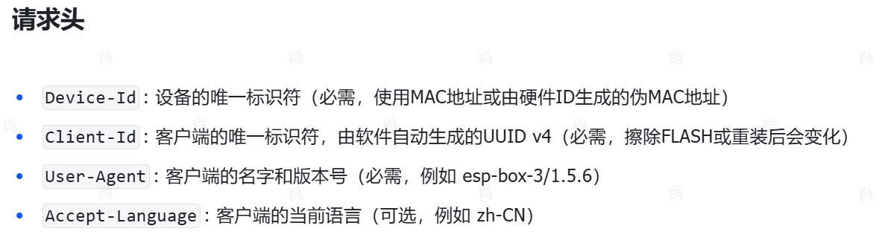</p><span class="yuque-card-unsupported">[codeblock]</span><h4 data-lake-id="mcLgY" data-lake-index-type="2" id="mcLgY"><span data-lake-id="ufc4e770b" id="ufc4e770b">构建Body</span></h4><p data-lake-id="u92c7ffaf" id="u92c7ffaf">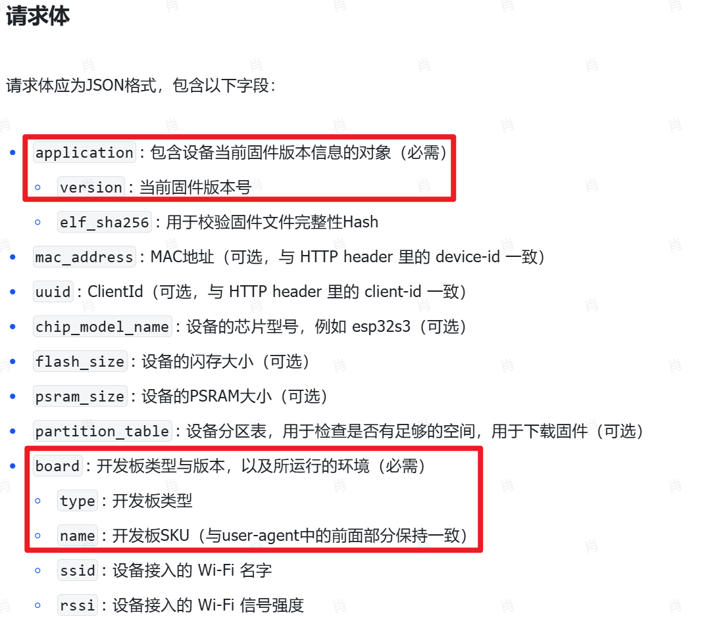</p><span class="yuque-card-unsupported">[codeblock]</span><h4 data-lake-id="QP1i7" data-lake-index-type="2" id="QP1i7"><span data-lake-id="u0a916692" id="u0a916692">发送数据</span></h4><p data-lake-id="uc0d0ffce" id="uc0d0ffce"><span data-lake-id="u0a6b9566" id="u0a6b9566">构建上面数据之后，接下来，我们就可以将数据发送出去咯</span></p><ol list="u0242ede0"><li data-lake-id="u822e090a" fid="u855207af" id="u822e090a"><span data-lake-id="u04ba6baf" id="u04ba6baf">发送的地址是这个</span></li></ol><span class="yuque-card-unsupported">[codeblock]</span><ol list="u91336376" start="2"><li data-lake-id="u162cbcc8" fid="ue0bf02cf" id="u162cbcc8"><span data-lake-id="ub739bef1" id="ub739bef1">发送数据的业务函数如下</span></li></ol><span class="yuque-card-unsupported">[codeblock]</span><p data-lake-id="u360d058a" id="u360d058a"><br/></p><h4 data-lake-id="cixEm" data-lake-index-type="2" id="cixEm"><span data-lake-id="u4eee6b9e" id="u4eee6b9e">接收OTA结果</span></h4><p data-lake-id="uedbb1a44" id="uedbb1a44"><span data-lake-id="u0e32126f" id="u0e32126f">在这一步，如果你的设备之前没有被添加到小智服务器，它会提示你去添加设备，如果已经添加过，则这一步骤执行完了就行，相当于是告诉小智服务器你的存在。</span></p><p data-lake-id="u52bbbbf4" id="u52bbbbf4"><span data-lake-id="u2d1f7aaa" id="u2d1f7aaa">在控制台会打印出这么一句话，请牢记你的激活码</span></p><p data-lake-id="ub1195dd0" id="ub1195dd0">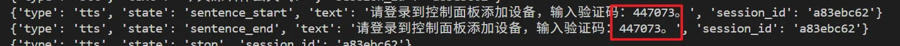</p><h3 data-lake-id="aYLnw" data-lake-index-type="2" id="aYLnw"><span data-lake-id="u34f75492" id="u34f75492">后台添加设备</span></h3><p data-lake-id="u4b34b806" id="u4b34b806"><span data-lake-id="u20094abd" id="u20094abd">打开网址：</span><a data-lake-id="ud7b43d36" href="https://xiaozhi.me/" id="ud7b43d36" rel="noopener noreferrer" target="_blank"><span data-lake-id="u7770ed16" id="u7770ed16">https://xiaozhi.me/</span></a></p><p data-lake-id="ucb192189" id="ucb192189"><span data-lake-id="ud483c6eb" id="ud483c6eb">牢记你的激活码</span></p><p data-lake-id="u3651d5b6" id="u3651d5b6">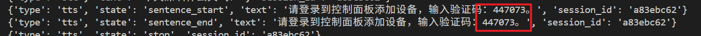</p><h4 data-lake-id="luZrn" data-lake-index-type="2" id="luZrn"><span data-lake-id="u7385f12d" id="u7385f12d">访问控制台</span></h4><p data-lake-id="u602efd45" id="u602efd45">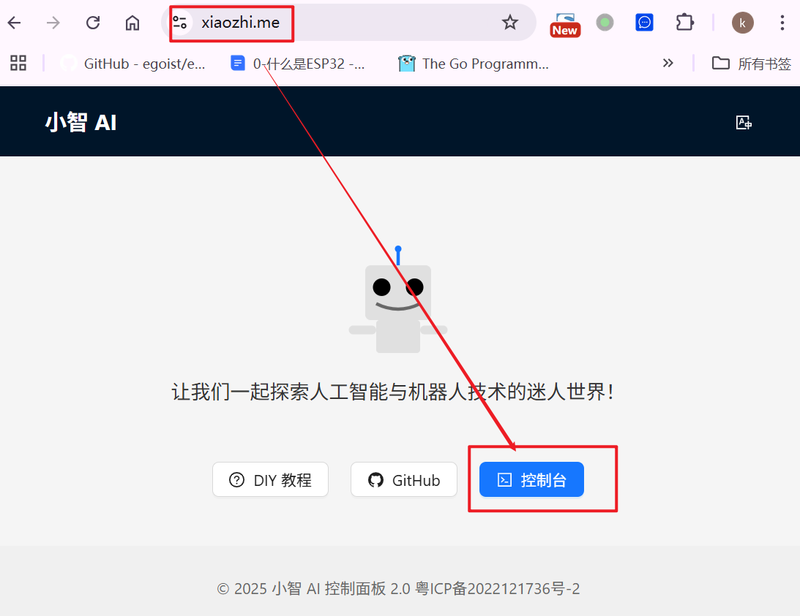</p><h4 data-lake-id="FmRyI" data-lake-index-type="2" id="FmRyI"><span data-lake-id="u213adc52" id="u213adc52">新建智能体</span></h4><p data-lake-id="u66526253" id="u66526253">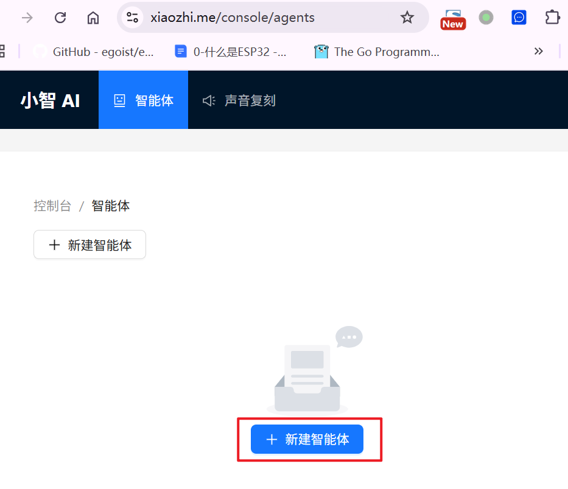</p><p data-lake-id="u9b2f11e2" id="u9b2f11e2"><span data-lake-id="u487a8c29" id="u487a8c29">​</span><br/></p><p data-lake-id="ucf6fb973" id="ucf6fb973">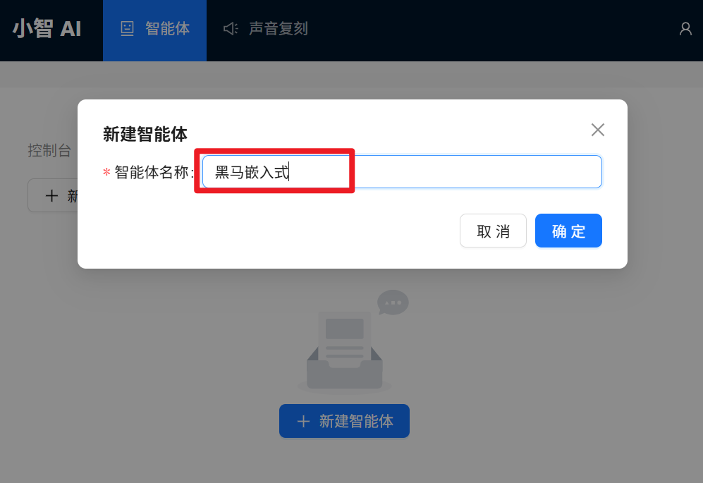</p><h4 data-lake-id="jJvqP" data-lake-index-type="2" id="jJvqP"><span data-lake-id="u0e9c0a70" id="u0e9c0a70">添加设备</span></h4><p data-lake-id="u7a7adbb5" id="u7a7adbb5">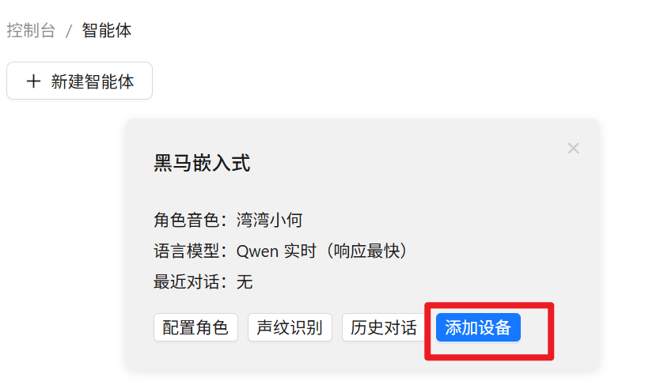</p><h5 data-lake-id="ZHOuC" data-lake-index-type="2" id="ZHOuC"><span data-lake-id="uba87b63a" id="uba87b63a">输入激活码</span></h5><p data-lake-id="ue1380750" id="ue1380750">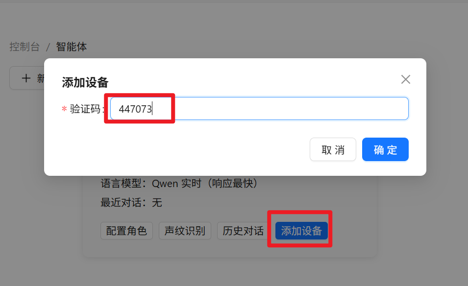</p><p data-lake-id="ude9c62ed" id="ude9c62ed"><span data-lake-id="u73e934fb" id="u73e934fb">选择白嫖版本</span></p><p data-lake-id="ue9e288fd" id="ue9e288fd">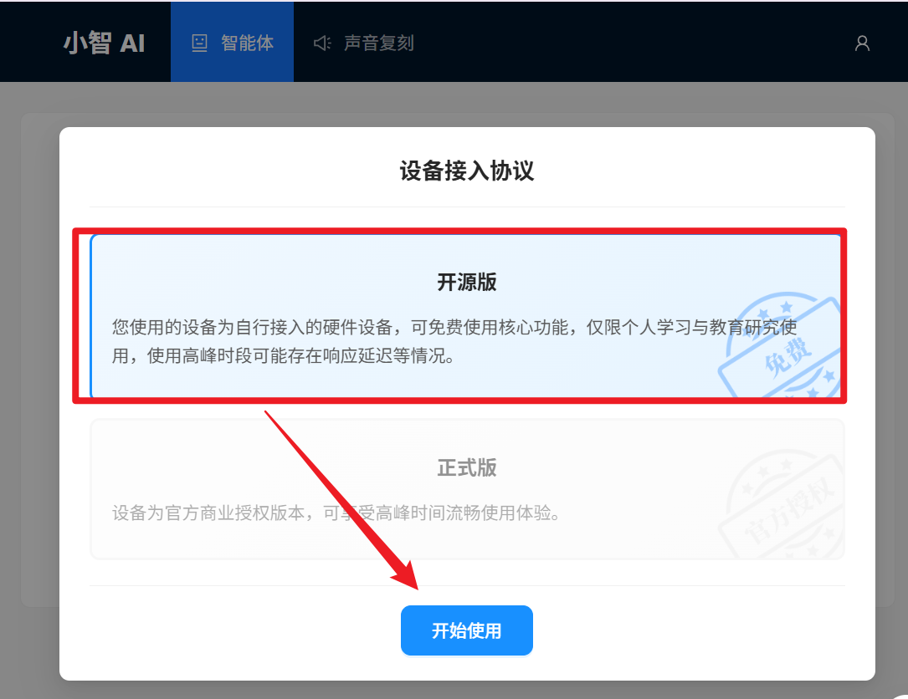</p><h4 data-lake-id="rlxdK" data-lake-index-type="2" id="rlxdK"><span data-lake-id="uff9f679d" id="uff9f679d">查看设备</span></h4><p data-lake-id="u876e4b40" id="u876e4b40"><span data-lake-id="u009aa469" id="u009aa469">在管理设备界面中，我们可以看到设备已经添加成功，下一步我们就可以进行语音对话咯</span></p><p data-lake-id="u0c0e3270" id="u0c0e3270">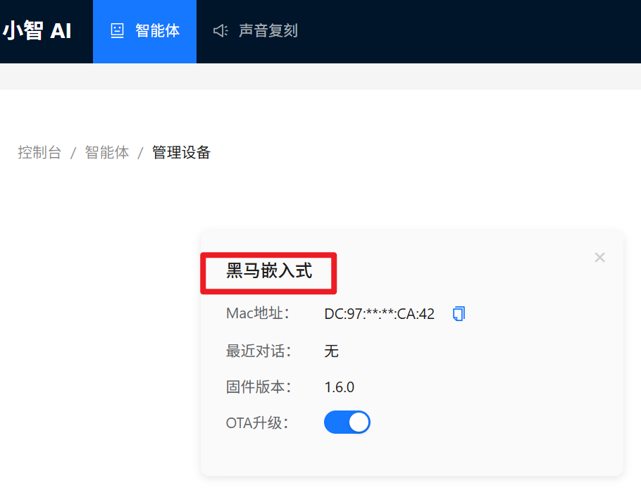</p><h3 data-lake-id="RXNOz" data-lake-index-type="2" id="RXNOz"><span data-lake-id="u962c9f86" id="u962c9f86">协议通信</span></h3><p data-lake-id="u0ebeecb6" id="u0ebeecb6"><span data-lake-id="u3c5c4d17" id="u3c5c4d17">参考文档：</span><a data-lake-id="ucc48deec" href="https://ccnphfhqs21z.feishu.cn/wiki/M0XiwldO9iJwHikpXD5cEx71nKh" id="ucc48deec" rel="noopener noreferrer" target="_blank"><span data-lake-id="u462c24b9" id="u462c24b9">https://ccnphfhqs21z.feishu.cn/wiki/M0XiwldO9iJwHikpXD5cEx71nKh</span></a></p><p data-lake-id="ud2bc5b23" id="ud2bc5b23">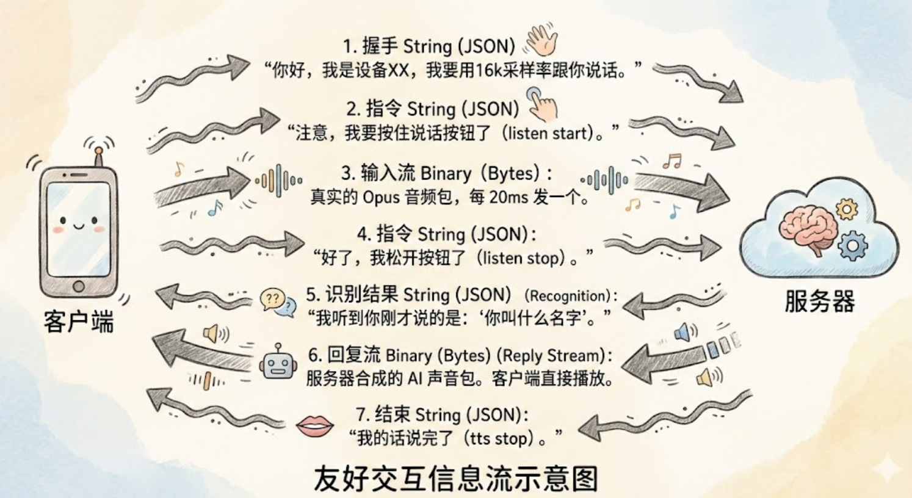</p><h4 data-lake-id="cenG0" data-lake-index-type="2" id="cenG0"><span data-lake-id="uf533cca7" id="uf533cca7">握手</span></h4><h5 data-lake-id="jy1tW" data-lake-index-type="2" id="jy1tW"><span data-lake-id="u29e898fd" id="u29e898fd">发送连接信息</span></h5><p data-lake-id="u4eabb345" id="u4eabb345"><span data-lake-id="u2bf74c5e" id="u2bf74c5e">在这一步，如果参数没有问题的话就会连接服务器成功</span></p><p data-lake-id="u77350727" id="u77350727">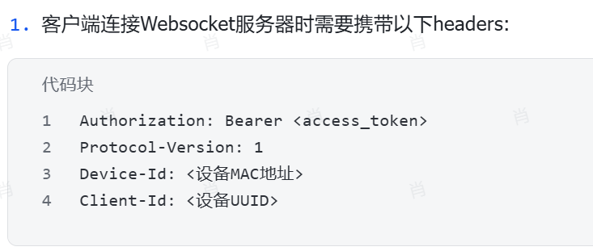</p><p data-lake-id="ua4433913" id="ua4433913"><span data-lake-id="u35574007" id="u35574007">根据小智的文档，我们定义如下头</span></p><span class="yuque-card-unsupported">[codeblock]</span><p data-lake-id="ud9fe328b" id="ud9fe328b"><span data-lake-id="u2b659e9b" id="u2b659e9b">使用websockets将数据发送出去</span></p><span class="yuque-card-unsupported">[codeblock]</span><h5 data-lake-id="qM78V" data-lake-index-type="2" id="qM78V"><span data-lake-id="u4b828ff0" id="u4b828ff0">处理服务器返回</span></h5><p data-lake-id="u8a368011" id="u8a368011"><span data-lake-id="u2d527b0d" id="u2d527b0d">我们需要启动一个任务，不停的去接收服务器返回的数据</span></p><span class="yuque-card-unsupported">[codeblock]</span><p data-lake-id="uafbf9688" id="uafbf9688"><span data-lake-id="uf546c1d6" id="uf546c1d6">这个函数需要不停的运行，所以我们用一个单独的任务把它运行起来</span></p><span class="yuque-card-unsupported">[codeblock]</span><p data-lake-id="u7516170e" id="u7516170e"><span data-lake-id="ub28ae83d" id="ub28ae83d">仔细观察这个任务的运行结果，我们会得到类似这样的日志</span></p><span class="yuque-card-unsupported">[codeblock]</span><h5 data-lake-id="UgHIK" data-lake-index-type="2" id="UgHIK"><span data-lake-id="uc9b46afb" id="uc9b46afb">发送hello信息</span></h5><p data-lake-id="u9cd78ceb" id="u9cd78ceb"><span data-lake-id="u300c433f" id="u300c433f">连接成功之后，客户端发送hello信息</span></p><span class="yuque-card-unsupported">[codeblock]</span><p data-lake-id="ua51e2394" id="ua51e2394"><span data-lake-id="u631e4ea2" id="u631e4ea2">发送成功之后，服务器会返回如下信息</span></p><span class="yuque-card-unsupported">[codeblock]</span><p data-lake-id="uc9ec791c" id="uc9ec791c"><br/></p><h4 data-lake-id="bapRO" data-lake-index-type="2" id="bapRO"><span data-lake-id="u0b013066" id="u0b013066">发送语音数据</span></h4><h5 data-lake-id="P7hpJ" data-lake-index-type="2" id="P7hpJ"><span data-lake-id="uaff3235a" id="uaff3235a">开始监听</span></h5><p data-lake-id="u3fe0176b" id="u3fe0176b"><span data-lake-id="u5d4d9e9c" id="u5d4d9e9c">这个地方相当于是告诉服务器，小智你听好了，现在我要开始跟你对话了</span></p><span class="yuque-card-unsupported">[codeblock]</span><p data-lake-id="ube4e097e" id="ube4e097e"><span data-lake-id="u8caa2ccb" id="u8caa2ccb">监听模式:</span></p><ul list="ue7284696"><li data-lake-id="u8435c831" fid="u187db305" id="u8435c831"><span data-lake-id="u5eb8c8e6" id="u5eb8c8e6">"auto": 自动停止</span></li><li data-lake-id="u533cf79c" fid="u187db305" id="u533cf79c"><span data-lake-id="ue888c1ca" id="ue888c1ca">"manual": 手动停止</span></li><li data-lake-id="u204eab06" fid="u187db305" id="u204eab06"><span data-lake-id="u746d6fda" id="u746d6fda">"realtime": 持续监听</span></li></ul><p data-lake-id="uf8852e83" id="uf8852e83"><span data-lake-id="ud5f61c0d" id="ud5f61c0d">这里我们直接使用手动模式。</span></p><p data-lake-id="u876886d8" id="u876886d8"><span data-lake-id="u92929233" id="u92929233">​</span><br/></p><h5 data-lake-id="nWwf3" data-lake-index-type="2" id="nWwf3"><span data-lake-id="uc20bbea2" id="uc20bbea2">发送语音</span></h5><p data-lake-id="u26b3e93d" id="u26b3e93d"><span data-lake-id="u1f83e979" id="u1f83e979">咱们可以发送几秒钟的数据试试，这里我们使用语音编码工具，将pcm格式的音频转成服务器要的opus格式的音频</span></p><span class="yuque-card-unsupported">[codeblock]</span><p data-lake-id="u732a4af6" id="u732a4af6"><span data-lake-id="uc02454b8" id="uc02454b8">​</span><br/></p><h5 data-lake-id="RbIoL" data-lake-index-type="2" id="RbIoL"><span data-lake-id="u21da7828" id="u21da7828">停止监听</span></h5><p data-lake-id="uf6101fc4" id="uf6101fc4"><span data-lake-id="u36d3fddc" id="u36d3fddc">相当于是告诉服务器：嘿，小智我说完了。</span></p><span class="yuque-card-unsupported">[codeblock]</span><p data-lake-id="ub35c6320" id="ub35c6320"><span data-lake-id="u5dff8d96" id="u5dff8d96">发送的示例代码</span></p><span class="yuque-card-unsupported">[codeblock]</span><p data-lake-id="u700122b1" id="u700122b1"><span data-lake-id="u26017eb6" id="u26017eb6">至此，相信大家已经搞明白小智AI的语音对话流程了吧</span></p><p data-lake-id="uac224202" id="uac224202"><span data-lake-id="u4600df07" id="u4600df07">​</span><br/></p><h5 data-lake-id="FgFnI" data-lake-index-type="2" id="FgFnI"><span data-lake-id="u9b7b0c4e" id="u9b7b0c4e">播放音频</span></h5><p data-lake-id="uc664f249" id="uc664f249"><span data-lake-id="uef4b2292" id="uef4b2292">更新当前设备应该所处的状态</span></p><span class="yuque-card-unsupported">[codeblock]</span><p data-lake-id="u13997e85" id="u13997e85"><span data-lake-id="u86277973" id="u86277973">将前面收到的音频信息保存到队列中</span></p><span class="yuque-card-unsupported">[codeblock]</span><p data-lake-id="u72bb7452" id="u72bb7452"><span data-lake-id="u2b116009" id="u2b116009">启动任务，去播放音频</span></p><span class="yuque-card-unsupported">[codeblock]</span><p data-lake-id="udaeeb5f9" id="udaeeb5f9"><br/></p><p data-lake-id="u665cad9b" id="u665cad9b"><span data-lake-id="uea8a57e6" id="uea8a57e6">保险起见，可以在上面这个函数调用之后，再调用下面的函数</span></p><span class="yuque-card-unsupported">[codeblock]</span><h5 data-lake-id="WNvAv" data-lake-index-type="2" id="WNvAv"><span data-lake-id="ueca82dc6" id="ueca82dc6">练习：实现小智多轮对话</span></h5><span class="yuque-card-unsupported">[codeblock]</span><p data-lake-id="u942bb8a1" id="u942bb8a1"><br/></p><h4 data-lake-id="Z0fzz" data-lake-index-type="2" id="Z0fzz"><span data-lake-id="ucd5fcd69" id="ucd5fcd69">发送IOT数据</span></h4><p data-lake-id="u8c3c3d4f" id="u8c3c3d4f"><span data-lake-id="uded8ddfd" id="uded8ddfd">在这里我们需要发送我们有哪些设备的描述文件给小智服务器</span></p><span class="yuque-card-unsupported">[codeblock]</span><p data-lake-id="udf044a09" id="udf044a09"><span data-lake-id="u5b597a55" id="u5b597a55">我们以一个灯为例</span></p><span class="yuque-card-unsupported">[codeblock]</span><p data-lake-id="ufba29276" id="ufba29276"><span data-lake-id="ua20c0466" id="ua20c0466">接下来，我们需要将IOT的描述文件发送给服务器</span></p><span class="yuque-card-unsupported">[codeblock]</span><p data-lake-id="uac3b90e2" id="uac3b90e2"><br/></p><p data-lake-id="u60525547" id="u60525547"><br/></p><h2 data-lake-id="ou20h" data-lake-index-type="2" id="ou20h"><span data-lake-id="u94b75f1b" id="u94b75f1b">拓展技能</span></h2><h3 data-lake-id="O9TDZ" data-lake-index-type="2" id="O9TDZ"><span data-lake-id="uf3413e07" id="uf3413e07">HTTP请求</span></h3><p data-lake-id="u044c1708" id="u044c1708" style="text-align: center">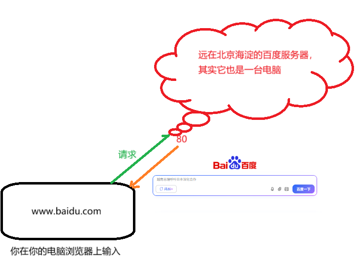</p><p data-lake-id="u43583511" id="u43583511"><span data-lake-id="u2911655a" id="u2911655a">“当我们在浏览器中输入 https://www.baidu.com 并按下回车时，发生了什么？”<br/></span><span data-lake-id="ud6200581" id="ud6200581">通过这个问题，引出 HTTP 协议的作用——客户端（浏览器）与服务器之间的“通信语言”。</span></p><p data-lake-id="u6bd5092a" id="u6bd5092a"><strong><span data-lake-id="ubaf12fca" id="ubaf12fca">核心概念</span></strong><span data-lake-id="ue921e6a7" id="ue921e6a7">：</span></p><ul list="u4c8afb36"><li data-lake-id="u0d0bbfde" fid="udfef9aeb" id="u0d0bbfde"><strong><span data-lake-id="u55116359" id="u55116359">HTTP</span></strong><span data-lake-id="uf1fe5f0d" id="uf1fe5f0d">：超文本传输协议，用于传输网页、API 数据等内容。</span></li><li data-lake-id="u379ee282" fid="udfef9aeb" id="u379ee282"><strong><span data-lake-id="uacfd88f5" id="uacfd88f5">请求-响应模型</span></strong><span data-lake-id="ufcf85bcd" id="ufcf85bcd">：客户端发送请求（Request）→ 服务器处理并返回响应（Response）。</span></li><li data-lake-id="u112075dd" fid="udfef9aeb" id="u112075dd"><strong><span data-lake-id="uc2ab447d" id="uc2ab447d">请求方法</span></strong><span data-lake-id="ue869296d" id="ue869296d">：GET（获取数据）、POST（提交数据,登陆注册常用这种方式）</span></li></ul><h4 data-lake-id="toc-8a79fcf4ffc4e297ff63dc1df523d19f" data-lake-index-type="2" id="toc-8a79fcf4ffc4e297ff63dc1df523d19f"><u><span data-lake-id="uaa6cd250" id="uaa6cd250">requests 模块安装</span></u></h4><p data-lake-id="u4684d487" id="u4684d487"><span data-lake-id="u38de7c42" id="u38de7c42">通过 pip 命令安装：</span></p><span class="yuque-card-unsupported">[codeblock]</span><h4 data-lake-id="toc-e0286134970aebdf8d7745a1f1ad4583" data-lake-index-type="2" id="toc-e0286134970aebdf8d7745a1f1ad4583"><span data-lake-id="ubfb12232" id="ubfb12232"> GET 请求</span></h4><p data-lake-id="u01a5b2ef" id="u01a5b2ef"><strong><span data-lake-id="uc497b7bc" id="uc497b7bc">场景</span></strong><span data-lake-id="u27f8058f" id="u27f8058f">：获取豆瓣电影 Top250 榜单数据（公开 API：https://api.douban.com/v2/movie/top250）。<br/></span><strong><span data-lake-id="ue8e19aab" id="ue8e19aab">步骤</span></strong><span data-lake-id="u83c6a77d" id="u83c6a77d">：</span></p><ul list="uc4dde7ab"><li data-lake-id="ud7b4cc7a" fid="u6db955e9" id="ud7b4cc7a"><strong><span data-lake-id="u15e0af95" id="u15e0af95">基础请求</span></strong><span data-lake-id="u592728d4" id="u592728d4">：</span></li></ul><span class="yuque-card-unsupported">[codeblock]</span><ul list="u7393510d"><li data-lake-id="u33823cb5" fid="uc65461f1" id="u33823cb5"><strong><span data-lake-id="ubdf0a9de" id="ubdf0a9de">传递参数</span></strong><span data-lake-id="u58f7592e" id="u58f7592e">：在url的屁股上通过?name=zhangsan这种方式传递参数</span></li></ul><span class="yuque-card-unsupported">[codeblock]</span><h4 data-lake-id="toc-03ca704f3ab014f50ab31eb4e7709793" data-lake-index-type="2" id="toc-03ca704f3ab014f50ab31eb4e7709793"><span data-lake-id="u30608a25" id="u30608a25">POST 请求</span></h4><p data-lake-id="u6585b72b" id="u6585b72b"><strong><span data-lake-id="ufb8d2d54" id="ufb8d2d54">场景</span></strong><span data-lake-id="uf7c5d177" id="uf7c5d177">：模拟用户登录（以测试接口 https://httpbin.org/post 为例）。<br/></span><strong><span data-lake-id="u4c56bd35" id="u4c56bd35">步骤</span></strong><span data-lake-id="uabbfa461" id="uabbfa461">：</span></p><ul list="u4ab3c2b4"><li data-lake-id="u5300837e" fid="u40c097dc" id="u5300837e"><strong><span data-lake-id="u41b0499a" id="u41b0499a">提交表单数据</span></strong><span data-lake-id="ubf6bd489" id="ubf6bd489">：使用 data 参数传递键值对。</span></li></ul><span class="yuque-card-unsupported">[codeblock]</span><p data-lake-id="u53aadc69" id="u53aadc69"><br/></p><h4 data-lake-id="svIeL" data-lake-index-type="2" id="svIeL"><span data-lake-id="ud7eb6d84" id="ud7eb6d84">response的几种返回值</span></h4><table class="lake-table" data-lake-id="ruLBD" id="ruLBD" margin="true" style="width: 748px"><colgroup><col width="187"/><col width="187"/><col width="187"/><col width="187"/></colgroup><tbody><tr data-lake-id="uc71b799b" id="uc71b799b"><td data-lake-id="uc8cc6e71" id="uc8cc6e71" style="background-color: rgb(242, 242, 242)"><p data-lake-id="u27dad7b5" id="u27dad7b5" style="text-align: left"><strong><span data-lake-id="u29f00ec3" id="u29f00ec3">方法/属性</span></strong></p></td><td data-lake-id="u476e634c" id="u476e634c" style="background-color: rgb(242, 242, 242)"><p data-lake-id="u8af0c8b4" id="u8af0c8b4" style="text-align: left"><strong><span data-lake-id="u182dd806" id="u182dd806">返回类型</span></strong></p></td><td data-lake-id="u96b17acc" id="u96b17acc" style="background-color: rgb(242, 242, 242)"><p data-lake-id="u91748dba" id="u91748dba" style="text-align: left"><strong><span data-lake-id="u9b731f08" id="u9b731f08">用途</span></strong></p></td><td data-lake-id="ua94769b0" id="ua94769b0" style="background-color: rgb(242, 242, 242)"><p data-lake-id="u0f239201" id="u0f239201" style="text-align: left"><strong><span data-lake-id="u8107c97e" id="u8107c97e">适用场景</span></strong></p></td></tr><tr data-lake-id="uaa8ca1d3" id="uaa8ca1d3"><td data-lake-id="u0d455c36" id="u0d455c36"><p data-lake-id="u8861befb" id="u8861befb" style="text-align: left"><code data-lake-id="u2c94dd98" id="u2c94dd98"><span data-lake-id="u62e7ce47" id="u62e7ce47">response.json()</span></code></p></td><td data-lake-id="ucf4a0197" id="ucf4a0197"><p data-lake-id="uce882485" id="uce882485" style="text-align: left"><span data-lake-id="uc32898bf" id="uc32898bf">字典/列表</span></p></td><td data-lake-id="ud3f00013" id="ud3f00013"><p data-lake-id="u08ead3d2" id="u08ead3d2" style="text-align: left"><span data-lake-id="u4a5dea3a" id="u4a5dea3a">解析 JSON 格式响应</span></p></td><td data-lake-id="u0d611929" id="u0d611929"><p data-lake-id="ucea8c91d" id="ucea8c91d" style="text-align: left"><span data-lake-id="uad016820" id="uad016820">API 数据获取</span></p></td></tr><tr data-lake-id="u60fa0c92" id="u60fa0c92"><td data-lake-id="u52684f84" id="u52684f84"><p data-lake-id="u3c35ae4a" id="u3c35ae4a" style="text-align: left"><code data-lake-id="u9a1b1f00" id="u9a1b1f00"><span data-lake-id="u4beafca8" id="u4beafca8">response.content</span></code></p></td><td data-lake-id="u0bb75e64" id="u0bb75e64"><p data-lake-id="u79d3422c" id="u79d3422c" style="text-align: left"><span data-lake-id="u19fab370" id="u19fab370">字节流</span></p></td><td data-lake-id="ue7c08bd7" id="ue7c08bd7"><p data-lake-id="udd870e87" id="udd870e87" style="text-align: left"><span data-lake-id="u2def8fd1" id="u2def8fd1">获取原始二进制数据</span></p></td><td data-lake-id="u3bb646c2" id="u3bb646c2"><p data-lake-id="uac2693ad" id="uac2693ad" style="text-align: left"><span data-lake-id="u5c0ab947" id="u5c0ab947">下载图片、文件</span></p></td></tr><tr data-lake-id="u77cc3ef3" id="u77cc3ef3"><td data-lake-id="u1b1cabc0" id="u1b1cabc0"><p data-lake-id="u932a4f98" id="u932a4f98" style="text-align: left"><code data-lake-id="u8c92e250" id="u8c92e250"><span data-lake-id="uae90d990" id="uae90d990">response.text</span></code></p></td><td data-lake-id="u1f78d004" id="u1f78d004"><p data-lake-id="u5f25e93a" id="u5f25e93a" style="text-align: left"><span data-lake-id="uebb5eea1" id="uebb5eea1">字符串</span></p></td><td data-lake-id="ue402bd4f" id="ue402bd4f"><p data-lake-id="u9aa54d14" id="u9aa54d14" style="text-align: left"><span data-lake-id="ucfc7df2a" id="ucfc7df2a">获取解码后的文本内容</span></p></td><td data-lake-id="u69d348f6" id="u69d348f6"><p data-lake-id="u8373af6c" id="u8373af6c" style="text-align: left"><span data-lake-id="u63610288" id="u63610288">网页 HTML、纯文本</span></p></td></tr></tbody></table><p data-lake-id="u737692a3" id="u737692a3"><br/></p><p data-lake-id="ub76851ea" id="ub76851ea"><br/></p><h3 data-lake-id="lGbEq" data-lake-index-type="2" id="lGbEq"><span data-lake-id="uf91c55d4" id="uf91c55d4">百度智能云</span></h3><p data-lake-id="u71230d14" id="u71230d14"><span data-lake-id="uaf4025b3" id="uaf4025b3">参考文档：</span><a data-lake-id="u0c41953a" href="https://ai.baidu.com/ai-doc/SPEECH/Tl9mh38eu" id="u0c41953a" rel="noopener noreferrer" target="_blank"><span data-lake-id="ue39b8dac" id="ue39b8dac">https://ai.baidu.com/ai-doc/SPEECH/Tl9mh38eu</span></a></p><p data-lake-id="u0381b2ab" id="u0381b2ab"><a data-lake-id="u6e66a459" href="https://ai.baidu.com/ai-doc/SPEECH/4l9mh6qf9" id="u6e66a459" rel="noopener noreferrer" target="_blank"><span data-lake-id="ubbbad17e" id="ubbbad17e">https://ai.baidu.com/ai-doc/SPEECH/4l9mh6qf9</span></a></p><h4 data-lake-id="uZNPp" data-lake-index-type="2" id="uZNPp"><span data-lake-id="ued412c9a" id="ued412c9a">注册应用</span></h4><p data-lake-id="u48afe266" id="u48afe266">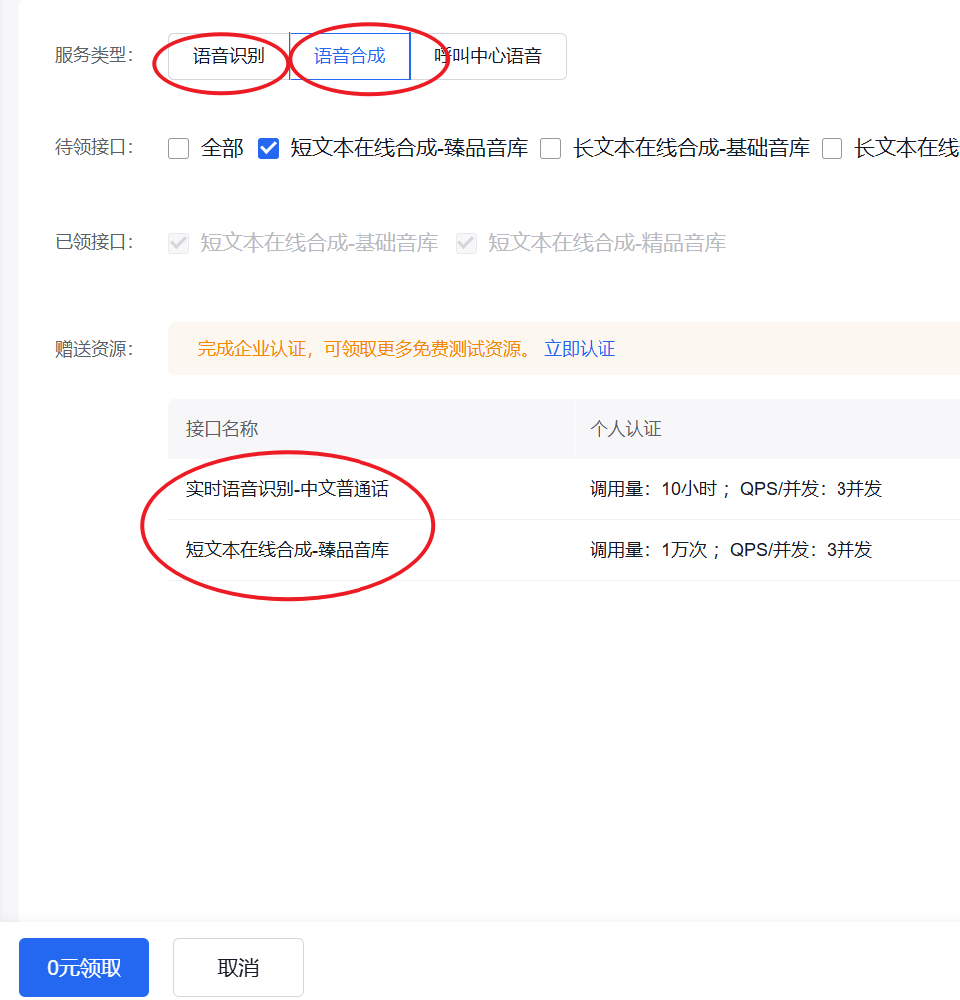</p><p data-lake-id="ufd35a0fe" id="ufd35a0fe">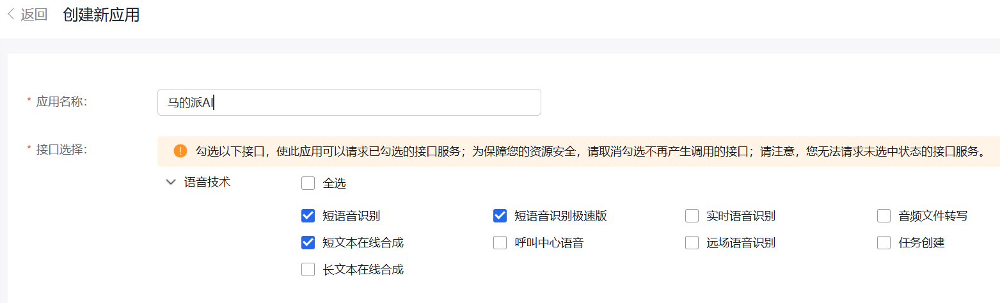</p><h4 data-lake-id="Ro7Ru" data-lake-index-type="2" id="Ro7Ru"><span data-lake-id="u5bc155b1" id="u5bc155b1">百度-语音合成</span><span data-lake-id="u01424b0e" id="u01424b0e" style="color: rgb(64, 64, 64)">TTS</span></h4><p data-lake-id="u9f551e13" id="u9f551e13"><span data-lake-id="u5a722c1a" id="u5a722c1a">语音合成（Text-to-Speech, TTS）<br/></span><span data-lake-id="u3864eb81" id="u3864eb81">语音合成是将文本转换为自然流畅的语音信号的技术。它通过模拟人类发声过程，生成可听的语音输出。</span></p><p data-lake-id="ucf1043a2" id="ucf1043a2"><span data-lake-id="u0fb869d0" id="u0fb869d0" style="color: rgb(64, 64, 64)">​</span><br/></p><p data-lake-id="u3d37409e" id="u3d37409e"><span data-lake-id="u4f9a7598" id="u4f9a7598">参考文档：</span><a data-lake-id="uf6143c0c" href="https://ai.baidu.com/ai-doc/SPEECH/mlbxh7xie" id="uf6143c0c" rel="noopener noreferrer" target="_blank"><span data-lake-id="ua834cd28" id="ua834cd28">https://ai.baidu.com/ai-doc/SPEECH/mlbxh7xie</span></a></p><span class="yuque-card-unsupported">[codeblock]</span><p data-lake-id="ub1e8271b" id="ub1e8271b"><br/></p><p data-lake-id="ubf62342f" id="ubf62342f"><br/></p><p data-lake-id="uaf7efe9b" id="uaf7efe9b"><br/></p><h4 data-lake-id="A6uVJ" data-lake-index-type="2" id="A6uVJ"><span data-lake-id="u3c360f47" id="u3c360f47">百度-语音识别ASR</span></h4><p data-lake-id="ud825ab0a" id="ud825ab0a"><span data-lake-id="u4561947d" id="u4561947d" style="color: rgb(64, 64, 64)">语音识别（Automatic Speech Recognition, ASR）<br/></span><span data-lake-id="u384a600f" id="u384a600f" style="color: rgb(64, 64, 64)">语音识别是将人类语音信号转换为对应文本的技术。它通过分析语音波形，识别其中的语言内容，并将其转化为计算机可处理的文本形式。</span></p><p data-lake-id="ub954e19f" id="ub954e19f"><span data-lake-id="u1d3bf704" id="u1d3bf704" style="color: rgb(64, 64, 64)">开通功能：</span><a data-lake-id="uab11b183" href="https://cloud.baidu.com/product/speech/asrpro" id="uab11b183" rel="noopener noreferrer" target="_blank"><span data-lake-id="u10786bfe" id="u10786bfe">https://cloud.baidu.com/product/speech/asrpro</span></a></p><p data-lake-id="u3bee7dd0" id="u3bee7dd0"><span data-lake-id="ucd574258" id="ucd574258">​</span><br/></p><p data-lake-id="u14c76c14" id="u14c76c14"><span data-lake-id="u09044e81" id="u09044e81">参考文档：</span><a data-lake-id="u794f57af" href="https://ai.baidu.com/ai-doc/SPEECH/4lbxdz34z" id="u794f57af" rel="noopener noreferrer" target="_blank"><span data-lake-id="u4ffb94bc" id="u4ffb94bc">https://ai.baidu.com/ai-doc/SPEECH/4lbxdz34z</span></a></p><span class="yuque-card-unsupported">[codeblock]</span><p data-lake-id="u772ab803" id="u772ab803"><br/></p><p data-lake-id="u296e2e21" id="u296e2e21"><br/></p><p data-lake-id="ubee60b87" id="ubee60b87"><br/></p>